This document is compiled from an RMarkdown file which contains all code or description necessary to reproduce the analysis for the accompanying project. Each section below describes a different component of the analysis and most of numbers and figures are generated directly from the underlying data on compilation.
LICENSE
If you want to reuse the code in this report, please note the license below should be followed.
The code is made available for non commercial research purposes only under the MIT. However, notwithstanding any provision of the MIT License, the software currently may not be used for commercial purposes without explicit written permission after contacting Shixiang Wang wangshx@shanghaitech.edu.cn or Xue-Song Liu liuxs@shanghaitech.edu.cn.
PART 0: Data preprocessing
In this part, raw data are collected from databases or papers and the core pre-processing steps are described in sections below.
The pre-processing work has been done by setting root path of the project repository as work directory. Therefore, keep in mind the work directory should be properly set if you are interested in reproducing the pre-processing procedure.
Prepare PCAWG datasets
We download PCAWG phenotype and copy number data from UCSC Xena and save them to local machine with R format.
dir.create("Xena")
# Phenotype (Specimen Centric) -----------------------------------------------
library(UCSCXenaTools)
pcawg_phenotype <- XenaData %>%
dplyr::filter(XenaHostNames == "pcawgHub") %>%
XenaScan("phenotype") %>%
XenaScan("specimen centric") %>%
XenaGenerate() %>%
XenaQuery()
pcawg_phenotype <- pcawg_phenotype %>%
XenaDownload(destdir = "Xena", trans_slash = TRUE)
phenotype_list <- XenaPrepare(pcawg_phenotype)
pcawg_samp_info_sp <- phenotype_list[1:4]
saveRDS(pcawg_samp_info_sp, file = "data/pcawg_samp_info_sp.rds")
# PCAWG (Specimen Centric) ------------------------------------------------
download.file(
"https://pcawg.xenahubs.net/download/20170119_final_consensus_copynumber_sp.gz",
"Xena/pcawg_copynumber_sp.gz"
)
pcawg_cn <- data.table::fread("Xena/pcawg_copynumber_sp.gz")
pcawg_samp_info_sp <- readRDS("data/pcawg_samp_info_sp.rds")
sex_dt <- pcawg_samp_info_sp$pcawg_donor_clinical_August2016_v9_sp %>%
dplyr::select(xena_sample, donor_sex) %>%
purrr::set_names(c("sample", "sex")) %>%
data.table::as.data.table()
saveRDS(sex_dt, file = "data/pcawg_sex_sp.rds")
pcawg_cn <- pcawg_cn[!is.na(total_cn)]
pcawg_cn$value <- NULL
pcawg_cn <- pcawg_cn[, c(1:5, 7)]
colnames(pcawg_cn)[1:5] <- c("sample", "Chromosome", "Start.bp", "End.bp", "modal_cn")
saveRDS(pcawg_cn, file = "data/pcawg_copynumber_sp.rds")
# LOH ---------------------------------------------------------------------
pcawg_cn <- readRDS("data/pcawg_copynumber_sp.rds")
pcawg_loh <- pcawg_cn %>%
dplyr::filter(Chromosome %in% as.character(1:22)) %>%
dplyr::mutate(len = End.bp - Start.bp + 1) %>%
dplyr::group_by(sample) %>%
dplyr::summarise(
n_LOH = sum(minor_cn == 0 & modal_cn > 0 & len >= 1e4)
) %>%
setNames(c("sample", "n_LOH")) %>%
data.table::as.data.table()
saveRDS(pcawg_loh, file = "data/pcawg_loh.rds")Generate PCAWG sample-by-component matrix
We then read the copy number data and transform it into a CopyNumber object with R package sigminer. Then sig_tally() is used to generate the matrix for NMF decomposition.
library(sigminer)
# Only focus autosomes, suggested by Prof. Liu
pcawg_cn <- readRDS("data/pcawg_copynumber_sp.rds")
table(pcawg_cn$Chromosome)
pcawg_cn <- pcawg_cn[!Chromosome %in% c("X", "Y")]
cn_obj <- read_copynumber(pcawg_cn,
add_loh = TRUE,
loh_min_len = 1e4,
loh_min_frac = 0.05,
max_copynumber = 1000L,
genome_build = "hg19",
complement = FALSE,
genome_measure = "called"
)
saveRDS(cn_obj, file = "data/pcawg_cn_obj.rds")
# Tally -------------------------------------------------------------------
library(sigminer)
cn_obj <- readRDS("data/pcawg_cn_obj.rds")
table(cn_obj@data$chromosome)
tally_X <- sig_tally(cn_obj,
method = "X",
add_loh = TRUE,
cores = 10
)
saveRDS(tally_X, file = "data/pcawg_cn_tally_X.rds")
str(tally_X$all_matrices, max.level = 1)
p <- show_catalogue(tally_X,
mode = "copynumber", method = "X",
style = "cosmic", y_tr = function(x) log10(x + 1),
y_lab = "log10(count +1)"
)
p
ggplot2::ggsave("output/pcawg_catalogs_tally_X.pdf", plot = p, width = 16, height = 2.5)
head(sort(colSums(tally_X$nmf_matrix)), n = 50)
## classes without LOH labels
tally_X_noLOH <- sig_tally(cn_obj,
method = "X",
add_loh = FALSE,
cores = 10
)
saveRDS(tally_X_noLOH$all_matrices, file = "data/pcawg_cn_tally_X_noLOH.rds")
str(tally_X_noLOH$all_matrices, max.level = 1)
p <- show_catalogue(tally_X_noLOH,
mode = "copynumber", method = "X",
style = "cosmic", y_tr = function(x) log10(x + 1),
y_lab = "log10(count +1)"
)
p
ggplot2::ggsave("output/pcawg_catalogs_tally_X_noLOH.pdf", plot = p, width = 16, height = 2.5)The generated catalog profiles for LOH version and non-LOH version component classification can be viewed by the following link:
- pcawg_catalogs_tally_X.pdf - 176 components
- pcawg_catalogs_tally_X_noLOH.pdf - 136 components
Prepare TCGA datasets
TCGA allele-specific copy number data are downloaded from GDC portal and transformed into R format by Huimin Li.
The data is go further checked and cleaned by Shixiang.
# Huimin collected TCGA data from GDC portal
# and generate file with format needed by sigminer
# Here I will firstly further clean up the data
library(data.table)
x <- readRDS("data/TCGA/datamicopy.rds")
setDT(x)
colnames(x)[6] <- "minor_cn"
head(x)
x[, sample := substr(sample, 1, 15)]
saveRDS(x, file = "data/TCGA/tcga_cn.rds")
rm(list = ls())TCGA phenotype data is downloaded from UCSC Xena.
download.file(
"https://pancanatlas.xenahubs.net/download/Survival_SupplementalTable_S1_20171025_xena_sp.gz",
"Xena/Survival_SupplementalTable_S1_20171025_xena_sp.gz"
)
tcga_cli <- data.table::fread("Xena/Survival_SupplementalTable_S1_20171025_xena_sp.gz")
table(tcga_cli$`cancer type abbreviation`)
saveRDS(tcga_cli, file = "data/TCGA/tcga_cli.rds")Generate TCGA sample-by-component matrix
Similar to PCAWG, TCGA matrices are also generated.
library(sigminer)
# Only focus autosomes
tcga_cn <- readRDS("data/TCGA/tcga_cn.rds")
table(tcga_cn$chromosome)
tcga_cn <- tcga_cn[!chromosome %in% c("chrX", "chrY")]
cn_obj <- read_copynumber(
tcga_cn,
seg_cols = c("chromosome", "start", "end", "segVal"),
add_loh = TRUE,
loh_min_len = 1e4,
loh_min_frac = 0.05,
max_copynumber = 1000L,
genome_build = "hg38",
complement = FALSE,
genome_measure = "called"
)
saveRDS(cn_obj, file = "data/TCGA/tcga_cn_obj.rds")
# Tally step
# Generate the counting matrices
# Same as what have done for PCAWG dataset
library(sigminer)
cn_obj <- readRDS("data/tcga_cn_obj.rds")
table(cn_obj@data$chromosome)
tally_X <- sig_tally(cn_obj,
method = "X",
add_loh = TRUE,
cores = 10
)
saveRDS(tally_X, file = "data/TCGA/tcga_cn_tally_X.rds")
p <- show_catalogue(tally_X,
mode = "copynumber", method = "X",
style = "cosmic", y_tr = function(x) log10(x + 1),
y_lab = "log10(count +1)"
)
p
ggplot2::ggsave("output/tcga_catalogs_tally_X.pdf", plot = p, width = 16, height = 2.5)
head(sort(colSums(tally_X$nmf_matrix)), n = 50)
## classes without LOH labels
tally_X_noLOH <- sig_tally(cn_obj,
method = "X",
add_loh = FALSE,
cores = 10
)
saveRDS(tally_X_noLOH$all_matrices, file = "data/TCGA/tcga_cn_tally_X_noLOH.rds")
str(tally_X_noLOH$all_matrices, max.level = 1)
p <- show_catalogue(tally_X_noLOH,
mode = "copynumber", method = "X",
style = "cosmic", y_tr = function(x) log10(x + 1),
y_lab = "log10(count +1)"
)
p
ggplot2::ggsave("output/tcga_catalogs_tally_X_noLOH.pdf", plot = p, width = 16, height = 2.5)The generated catalog profiles for LOH version and non-LOH version component classification can be viewed by the following link:
- tcga_catalogs_tally_X.pdf - 176 components
- tcga_catalogs_tally_X_noLOH.pdf - 136 components
PCAWG genotype/phenotype data type and source
If no references described, PCAWG genotype/phenotype data used in this study are obtained from UCSC Xena database, the original data source is PCAWG paper collection published in early 2020.
- Consensus copy number (page in UCSC Xena).
- General phenotype information (page in UCSC Xena).
- Tumor purity & ploidy & WGD status (page in UCSC Xena).
- Gene level fusion events (page in UCSC Xena).
- LOH number, calculated from copy number data, defined as number of copy number segments passing the following criterion:
- Minor copy number equals to
0. - Total copy number is greater than
0. - Segment length is greater than
10Kb.
- Minor copy number equals to
- HRD status by CHORD framework, the raw data is available at Nguyen et al. (2020), cleaned by Huimin Li.
- Chromothripsis detected by ShatterSeek, the data is obtained from http://compbio.med.harvard.edu/chromothripsis/.
- Amplicons (including ecDNA) detected by AmpliconArchitect, obtained from Kim et al. (2020).
- Telomere content detected by TelomereHunter, obtained from PCAWG-Structural Variation Working Group et al. (2020).
- APOBEC mutations (page in UCSC Xena).
PART 1: Copy number signature identification and activity attribution
In this part, how the copy number signatures are identified and how the corresponding signature activities (a.k.a. exposures) are attributed are described in sections below. The 176 component classification for PCAWG data is our main focus.
The work of this part has been done by either setting root path of the project repository as work directory or moving data and code to the same path (see below). Therefore, keep in mind the work directory/data path should be properly set if you are interested in reproducing the analysis procedure.
The signature identification work cannot be done in local machine because high intensity calculations are required, we used HPC of ShanghaiTech University to submit computation jobs to HPC clusters. Input data files, R scripts and PBS job scripts are stored in a same path, the structure can be viewed as:
.
├── 04-call-tcga-signatures-with-BP-types.R
├── 05-call-pcawg-signatures-with-BP-types.R
├── bp_pcawg.pbs
├── bp_pcawg_types.pbs
├── bp_tcga.pbs
├── bp_tcga_types.pbs
├── call_pcawg_bp.R
├── call_pcawg_sp.R
├── call_tcga_bp.R
├── call_tcga.R
├── pcawg_cn_tally_X.rds
├── pcawg.pbs
├── tcga_cn_tally_X.rds
├── tcga.pbsCopy number signature identification
The signature identification pipeline is adopted from Degasperi et al. (2020), we implemented the procedure in our package sigminer by following the method description. A benchmark has been done to make sure our implementation works properly.
Identification pipeline
To make the signature identification procedure more clear, we drew a flowchart. We name this pipeline “Best Practice” and use its short name BP (or bp).
TODO: add flowchart
Apply to PCAWG catalog matrix
PBS file bp_pcawg.pbs content:
#PBS -l walltime=500:00:00
#PBS -l nodes=1:ppn=50
#PBS -S /bin/bash
#PBS -l mem=300gb
#PBS -j oe
#PBS -M w_shixiang@163.com
#PBS -q slst_pub
# Please set PBS arguments above
cd /public/home/wangshx/wangshx/PCAWG-TCGA
module load apps/R/3.6.1
# Following are commands/scripts you want to run
Rscript call_pcawg_bp.RR script call_pcawg_bp.R content:
library(sigminer)
tally_X <- readRDS("pcawg_cn_tally_X.rds")
tally_X_noLOH <- readRDS("pcawg_cn_tally_X_noLOH.rds")
sigs <- bp_extract_signatures(
tally_X$nmf_matrix,
range = 2:30,
n_bootstrap = 10,
n_nmf_run = 10,
cores = 50,
cache_dir = "pcawg_bp_pynmf",
keep_cache = TRUE,
cores_solution = 30,
pynmf = TRUE,
use_conda = TRUE
)
saveRDS(sigs, file = "pcawg_cn_sigs_CN176_BP.rds")Signature number determination
The code above call 100 NMF runs (10 bootstrap catalogs and 10 NMF runs for each bootstrap catalog) for each signature number. Only 1000 NMF runs (20 bootstrap catalogs and 50 NMF runs for each bootstrap catalog) was applied for 176-component classification approach, which has the same arguments proposed by Degasperi et al. (2020).
First, load the results.
library(sigminer)
solution1000 <- readRDS("../BP/BP_PCAWG_1000_Extraction_Result.rds")
solution100 <- readRDS("../data/pcawg_cn_sigs_CN176_BP.rds")Next we compare some important measures for signature number determination. We can see 100 NMF runs and 1000 NMF runs can achieve very similar results.
bp_show_survey(solution1000, add_score = F, fixed_ratio = F)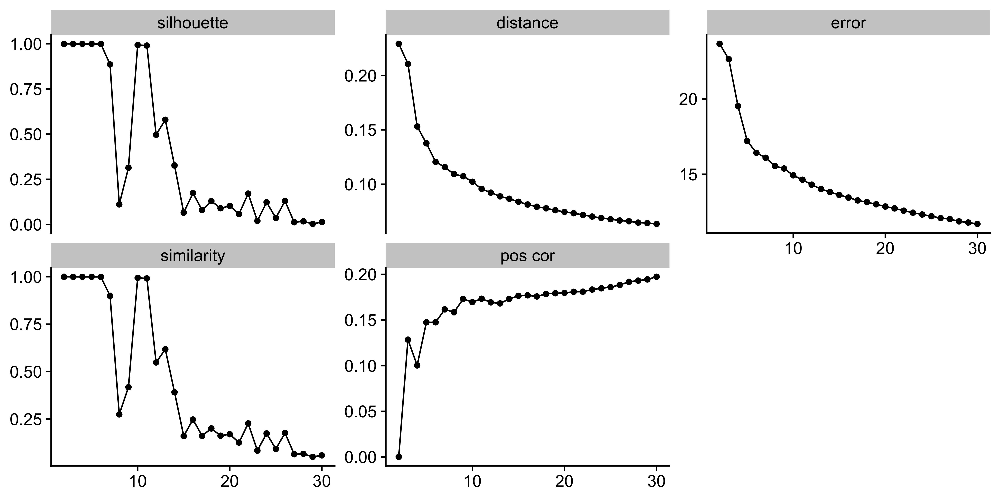
bp_show_survey(solution100, add_score = F, fixed_ratio = F)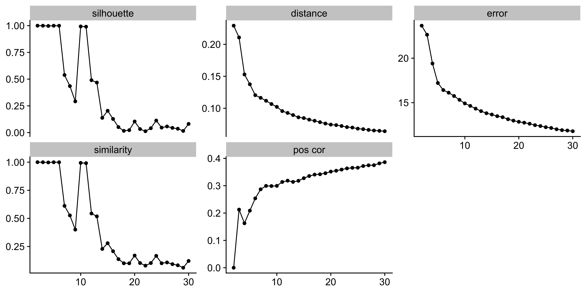 Basically, the 5 measures can be classified into 3 categories:
silhouetteandsimilarity: these two scores indicate the result stability. The signature number with value decreases sharply is preferred.distanceanderror: these two scores indicate the difference between raw matrix and reconstructed matrix for signatures. The signature number with lower value is better.pos cor: this is constructed by Prof. Liu and Shixiang to see the average positive correlation between signatures. A signature number should be considered if it has lower value. In practice, we find this measure has referential value sometimes.
More see ?bp_show_survey in R console for how they are calculated.
In previous study, Degasperi et al. (2020) used silhouette and error for signature number determination, PCAWG Mutational Signatures Working Group et al. (2020) used similarity and distance for signature number determination. For plots above we can see that they very close.
From plots above, we observe that the stability drops sharply after 11, so here 11 signatures is selected for this PCAWG dataset.
Similarity between two results with different parameter setting
We have two results above, so we can compare the signatures from two different parameter setting by calculating their pairwise cosine similarity.
sim <- get_sig_similarity(solution1000$object$K11, solution100$object$K11)
pheatmap::pheatmap(sim$similarity, cluster_rows = FALSE, cluster_cols = FALSE, display_numbers = TRUE)
We can know that the results contain same signature profile! This practice indicates that 100 NMF runs for each signature number is enough.
The Signature object with 11 signature profiles are stored for further analysis.
# Use root directory as work directory
saveRDS(solution1000$object$K11, file = "data/pcawg_cn_sigs_CN176_signature.rds")Reliable signature activity attribution
After signature determination, the reliable activities (a.k.a. exposures) of signatures are attributed to each sample for downstream analysis.
Attribution pipeline
There are 3 core steps in this pipeline:
- Step1: We run
n = 100optimizations on bootstrapped data and obtain a distribution of activities for each sample. - Step2: We consider the median activities as point estimates.
- step3: In each sample, we reset a signature activity to
0if its activity distribution below the threshold of1%of total mutations in the sample with one-side T test p value>0.05.
This pipeline is similar to previously reported Huang, Wojtowicz, and Przytycka (2018). However, there are some different settings:
- We use
1%of total mutations as a threshold here instead5%in Degasperi et al. (2020), because we observed some copy number segment contributions are removed from results with5%but they can be used for better explanation of sample copy number profile reconstruction. - We use T test for P value calculation here instead of empirical P value calculation based on proportion in Degasperi et al. (2020) for keeping more positive events.
TODO: add flowchart
Apply to PCAWG catalog matrix and signatures
We apply the attribution pipeline above.
# Use root directory as work directory
library(sigminer)
tally_X <- readRDS("data/pcawg_cn_tally_X.rds")
pcawg_types <- readRDS("data/pcawg_type_info.rds")
sc <- pcawg_types$cancer_type
names(sc) <- pcawg_types$sample
pcawg_expo <- bp_attribute_activity(
solution1000$object$K11,
sample_class = sc,
nmf_matrix = tally_X$nmf_matrix,
return_class = "data.table"
)
saveRDS(pcawg_expo, file = "data/pcawg_cn_sigs_CN176_activity.rds")Now we can know how well each sample catalog profile can be constructed from the signature combination.
pcawg_expo <- readRDS("../data/pcawg_cn_sigs_CN176_activity.rds")
summary(pcawg_expo$similarity) Min. 1st Qu. Median Mean 3rd Qu. Max.
0.4446 0.8431 0.9043 0.8950 0.9649 0.9999 hist(pcawg_expo$similarity, breaks = 100, xlab = "Reconstructed similarity", main = NA)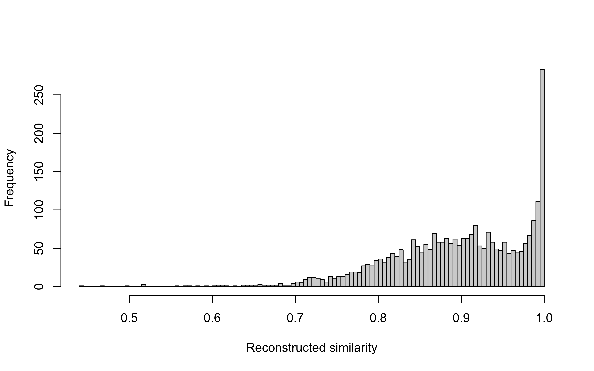 Most of samples are well constructed. Next we will use a similarity threshold 0.75 to filter out some samples for removing their effects on the following analysis.
TCGA copy number signatures
To validate the copy number signatures discovered in PCAWG database, we need another database for validation. TCGA is the best resource we got and similar processing and signature identification are applied.
library(sigminer)
tally_X <- readRDS("tcga_cn_tally_X.rds")
tally_X_noLOH <- readRDS("tcga_cn_tally_X_noLOH.rds")
sigs <- bp_extract_signatures(
tally_X$nmf_matrix,
range = 2:30,
cores = 50,
n_bootstrap = 10,
n_nmf_run = 10,
cache_dir = "tcga_bp_pynmf",
keep_cache = TRUE,
cores_solution = 30,
pynmf = TRUE,
use_conda = TRUE
)
saveRDS(sigs, file = "tcga_cn_sigs_CN176_BP.rds")Load the solution list:
tcga_solutions <- readRDS("../data/TCGA/tcga_cn_sigs_CN176_BP.rds")bp_show_survey(tcga_solutions, add_score = FALSE, fixed_ratio = FALSE, )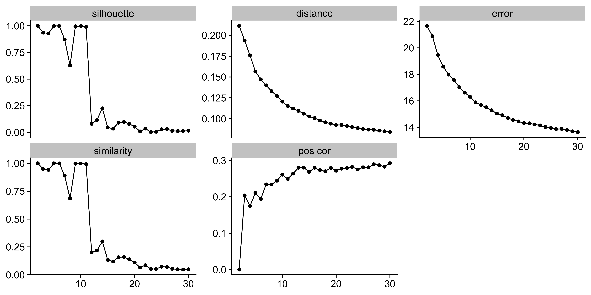 Also 11 signatures are determined based on survey plot.
Similarly, we apply the attribution pipeline to TCGA.
library(sigminer)
tcga_solutions <- readRDS("data/TCGA/tcga_cn_sigs_CN176_BP.rds")
tcga_expo <- bp_attribute_activity(
tcga_solutions$object$K11,
sample_class = sc,
nmf_matrix = tally_X$nmf_matrix,
return_class = "data.table"
)
saveRDS(tcga_expo, file = "data/TCGA/tcga_cn_sigs_CN176_activity.rds")tcga_expo <- readRDS("../data/TCGA/tcga_cn_sigs_CN176_activity.rds")
summary(tcga_expo$similarity) Min. 1st Qu. Median Mean 3rd Qu. Max.
0.2794 0.8092 0.8765 0.8623 0.9239 0.9788 hist(tcga_expo$similarity, breaks = 100, xlab = "Reconstructed similarity", main = NA)
PART 2: Signature profile visualization and analysis
In this part, we would like to visualize and analyze all tumor samples as a whole.
Signature profile visualization
library(tidyverse)
library(sigminer)
pcawg_sigs <- readRDS(file = "../data/pcawg_cn_sigs_CN176_signature.rds")Show signature profile with relative contribution value for each component.
show_sig_profile(
pcawg_sigs,
mode = "copynumber",
method = "X",
style = "cosmic"
)
Show signature profile with absolute contribution value (estimated segment count) for each component.
show_sig_profile(
pcawg_sigs,
mode = "copynumber",
method = "X",
style = "cosmic",
normalize = "raw"
)
Show signature activity profile.
show_sig_exposure(
pcawg_sigs,
style = "cosmic",
rm_space = TRUE,
palette = sigminer:::letter_colors
)
Signature analysis
Signature similarity
Here we explore the similarity between copy number signatures identified in PCAWG data. High cosine similarity will cause some issues in signature assignment and activity attribution (Maura et al. 2019).
sim <- get_sig_similarity(pcawg_sigs, pcawg_sigs)pheatmap::pheatmap(sim$similarity, cluster_cols = F, cluster_rows = F, display_numbers = TRUE)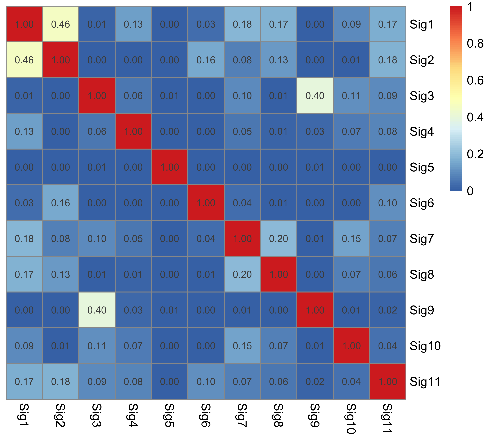
Most of signature-pairs have similarity around 0.1.
Signature activity distribution
Transform data to long format.
df_abs <- get_sig_exposure(pcawg_sigs) %>%
tidyr::pivot_longer(cols = starts_with("Sig"), names_to = "sig", values_to = "activity") %>%
dplyr::mutate(
activity = log10(activity + 1),
sig = factor(sig, levels = paste0("Sig", 1:11))
)
df_rel <- get_sig_exposure(pcawg_sigs, type = "relative", rel_threshold = 0) %>%
tidyr::pivot_longer(cols = starts_with("Sig"), names_to = "sig", values_to = "activity") %>%
dplyr::mutate(
sig = factor(sig, levels = paste0("Sig", 1:11))
)Plot with function in sigminer.
show_group_distribution(
df_abs,
gvar = "sig",
dvar = "activity",
order_by_fun = FALSE,
g_angle = 90,
ylab = "log10(activity+1)"
)show_group_distribution(
df_rel,
gvar = "sig",
dvar = "activity",
order_by_fun = FALSE,
g_angle = 90,
ylab = "relative activity"
)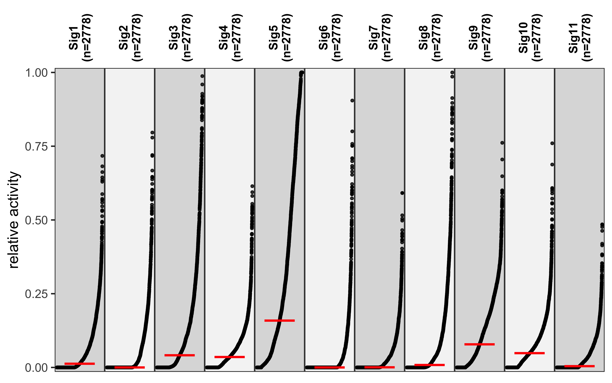
Copy number profile and signature activity
Copy number profile for representative samples
Here we will draw copy number profile of 2 representative samples for each signature.
get_sample_from_sig <- function(dt, sig) {
res <- head(dt[order(dt[[sig]], decreasing = TRUE)], 2L)
res
}Read CopyNumber object for PCAWG data.
pcawg_cn_obj <- readRDS("../data/pcawg_cn_obj.rds")
samp_summary <- pcawg_cn_obj@summary.per.sample
rel_activity <- get_sig_exposure(pcawg_sigs, type = "relative", rel_threshold = 0)
rel_activity <- rel_activity[, lapply(.SD, function(x) {
if (is.numeric(x)) round(x, 3) else x
})]dir.create("../output/enrich_samples/", showWarnings = FALSE)
for (i in paste0("Sig", 1:11)) {
cat(paste0("Most enriched in ", i, "\n"))
s <- get_sample_from_sig(rel_activity, i)
print(s)
plist <- show_cn_profile(pcawg_cn_obj,
samples = s$sample,
show_title = TRUE,
return_plotlist = TRUE
)
plist <- purrr::map2(plist, s$sample, function(p, x) {
s <- samp_summary[sample == x]
text <- paste0(
"n_of_seg:", s$n_of_seg, "\n",
"n_of_amp:", s$n_of_amp, "\n",
"n_of_del:", s$n_of_del, "\n"
)
p <- p + annotate("text",
x = Inf, y = Inf, hjust = 1, vjust = 1,
label = text
)
p
})
p <- cowplot::plot_grid(plotlist = plist, nrow = 2)
print(p)
ggplot2::ggsave(file.path("../output/enrich_samples/", paste0(i, ".pdf")),
plot = p, width = 12, height = 6
)
}Most enriched in Sig1
sample Sig1 Sig2 Sig3 Sig4 Sig5 Sig6 Sig7 Sig8 Sig9 Sig10 Sig11
1: SP105253 0.717 0.045 0.000 0.001 0 0.03 0.183 0.000 0.003 0.003 0.018
2: SP98941 0.682 0.200 0.002 0.000 0 0.00 0.002 0.099 0.000 0.009 0.005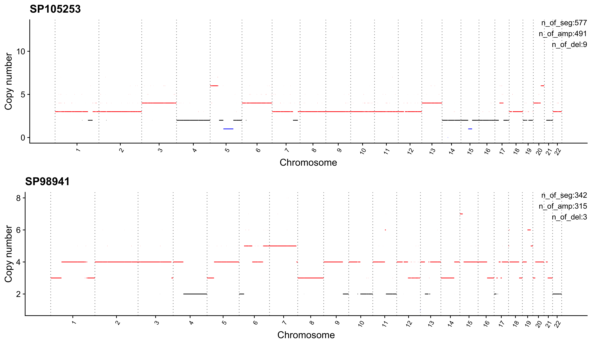
Most enriched in Sig2
sample Sig1 Sig2 Sig3 Sig4 Sig5 Sig6 Sig7 Sig8 Sig9 Sig10 Sig11
1: SP55235 0.056 0.796 0.000 0.006 0.007 0.031 0.010 0.066 0.000 0 0.027
2: SP56303 0.019 0.779 0.004 0.000 0.000 0.102 0.064 0.026 0.005 0 0.001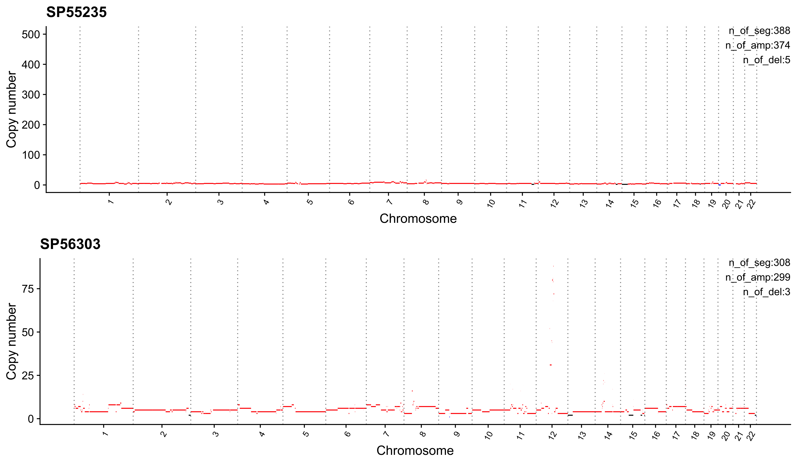
Most enriched in Sig3
sample Sig1 Sig2 Sig3 Sig4 Sig5 Sig6 Sig7 Sig8 Sig9 Sig10 Sig11
1: SP112911 0 0 0.988 0.002 0.006 0 0.000 0 0.004 0 0
2: SP112817 0 0 0.959 0.006 0.013 0 0.005 0 0.016 0 0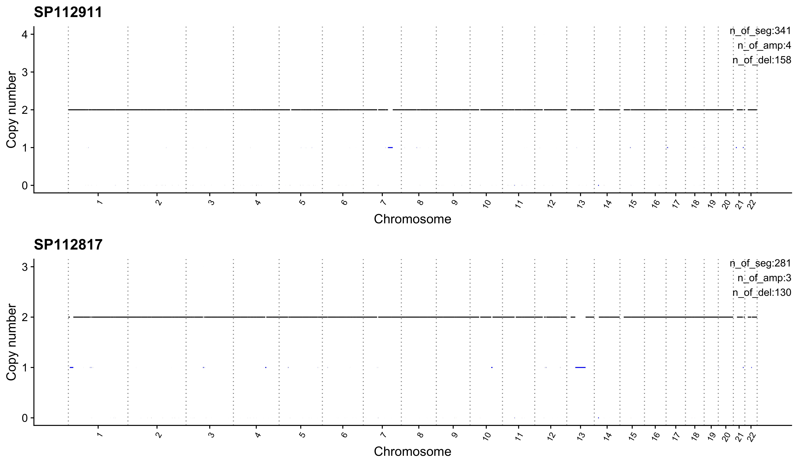
Most enriched in Sig4
sample Sig1 Sig2 Sig3 Sig4 Sig5 Sig6 Sig7 Sig8 Sig9 Sig10 Sig11
1: SP114903 0.144 0.000 0.005 0.615 0.187 0 0.008 0.003 0.030 0.008 0.000
2: SP114898 0.166 0.001 0.005 0.594 0.194 0 0.006 0.002 0.022 0.006 0.002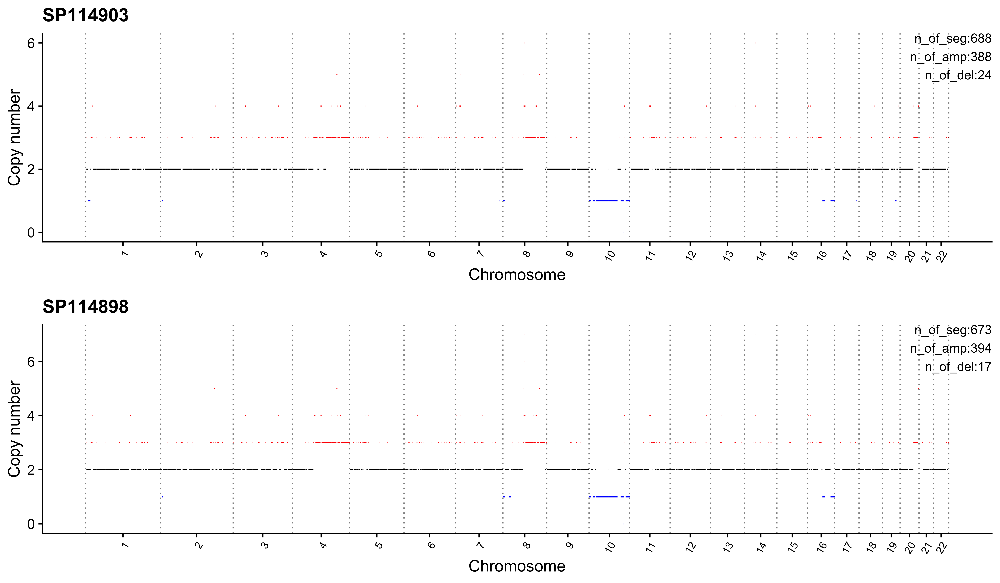
Most enriched in Sig5
sample Sig1 Sig2 Sig3 Sig4 Sig5 Sig6 Sig7 Sig8 Sig9 Sig10 Sig11
1: SP105708 0 0 0 0 1 0 0 0 0 0 0
2: SP107359 0 0 0 0 1 0 0 0 0 0 0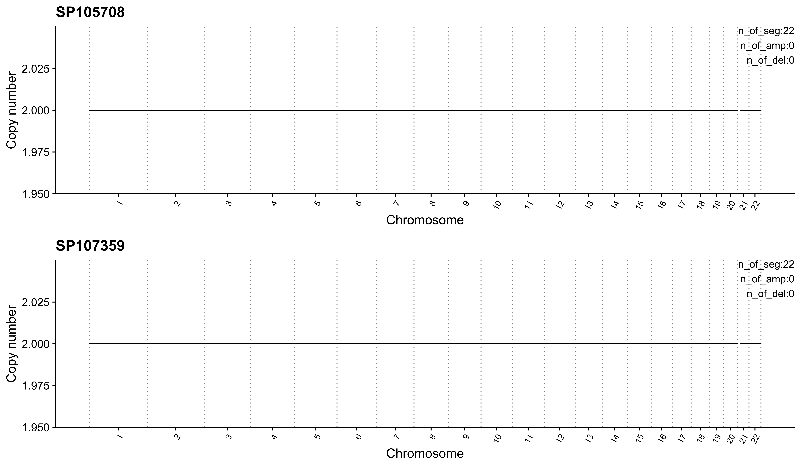
Most enriched in Sig6
sample Sig1 Sig2 Sig3 Sig4 Sig5 Sig6 Sig7 Sig8 Sig9 Sig10 Sig11
1: SP116525 0.033 0.021 0.001 0.002 0.000 0.905 0.004 0.028 0 0.003 0.004
2: SP121824 0.000 0.000 0.000 0.013 0.028 0.800 0.001 0.000 0 0.002 0.156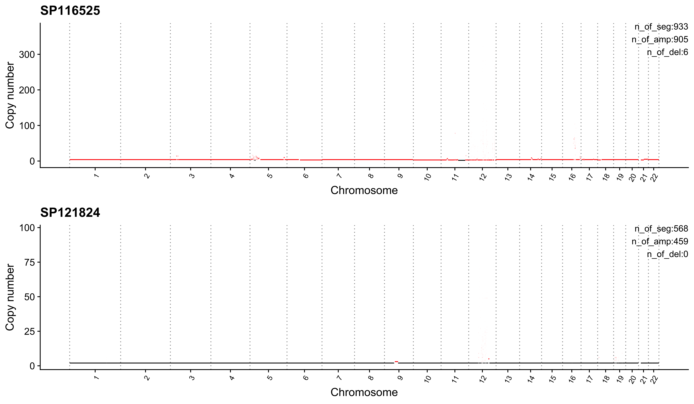
Most enriched in Sig7
sample Sig1 Sig2 Sig3 Sig4 Sig5 Sig6 Sig7 Sig8 Sig9 Sig10 Sig11
1: SP116345 0.006 0.349 0 0 0 0.003 0.591 0.051 0.000 0.000 0
2: SP124197 0.069 0.104 0 0 0 0.000 0.591 0.156 0.028 0.053 0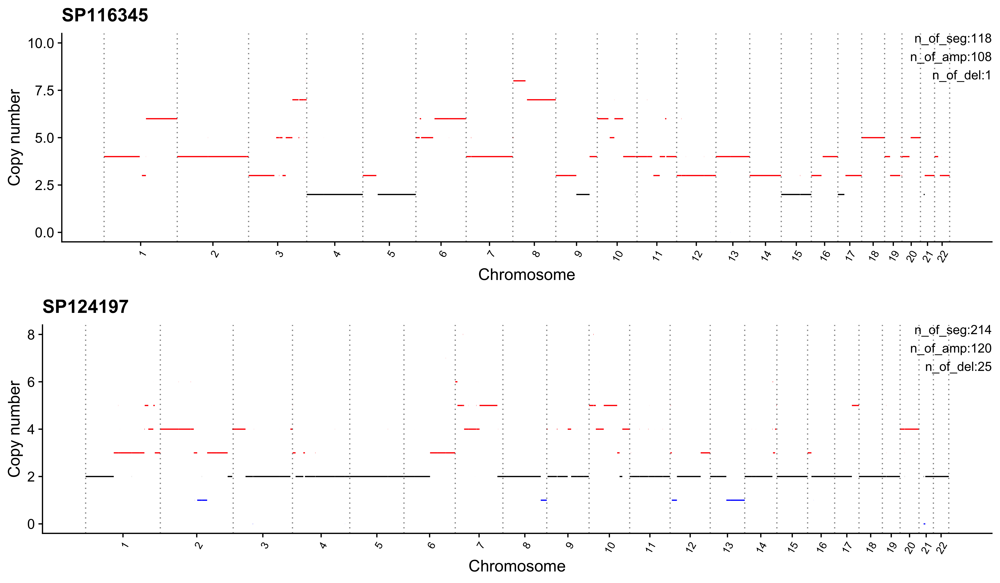
Most enriched in Sig8
sample Sig1 Sig2 Sig3 Sig4 Sig5 Sig6 Sig7 Sig8 Sig9 Sig10 Sig11
1: SP5381 0.000 0 0 0 0 0 0 1.000 0 0 0
2: SP78664 0.014 0 0 0 0 0 0 0.986 0 0 0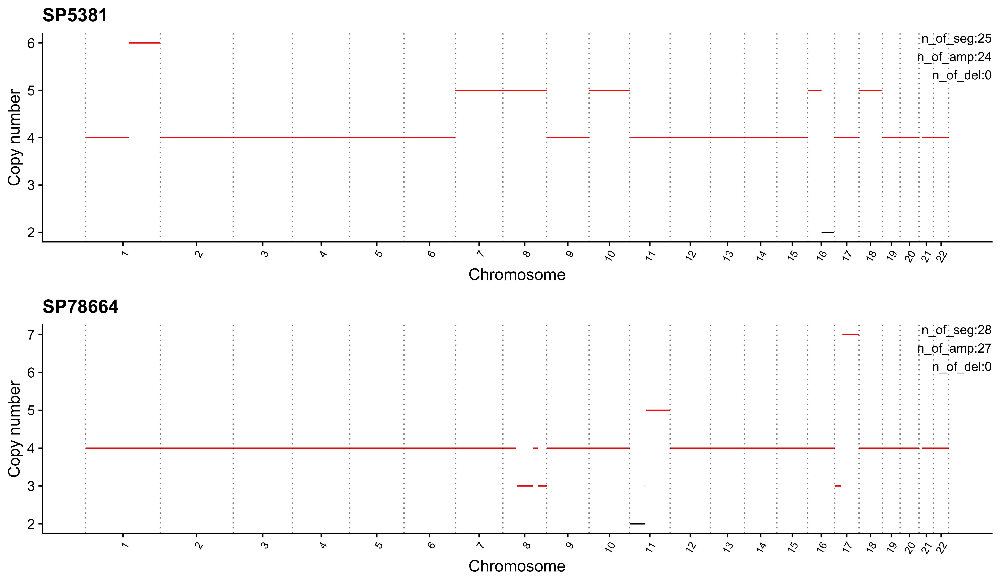
Most enriched in Sig9
sample Sig1 Sig2 Sig3 Sig4 Sig5 Sig6 Sig7 Sig8 Sig9 Sig10 Sig11
1: SP106797 0 0 0.073 0.029 0.136 0 0 0 0.762 0 0
2: SP135354 0 0 0.043 0.000 0.251 0 0 0 0.705 0 0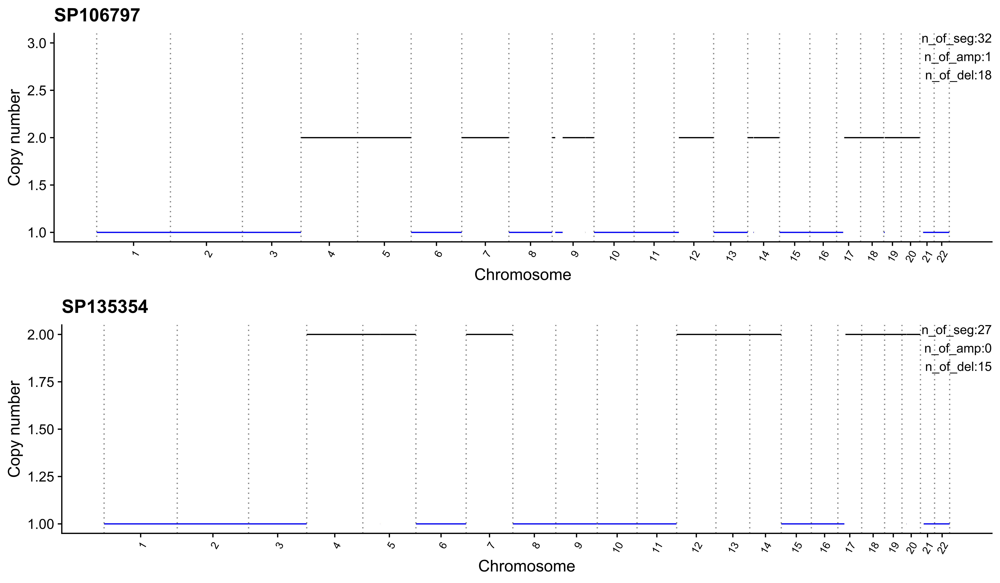
Most enriched in Sig10
sample Sig1 Sig2 Sig3 Sig4 Sig5 Sig6 Sig7 Sig8 Sig9 Sig10 Sig11
1: SP117086 0.000 0 0 0.000 0.038 0 0.065 0.094 0.043 0.760 0
2: SP117223 0.071 0 0 0.007 0.197 0 0.000 0.015 0.022 0.688 0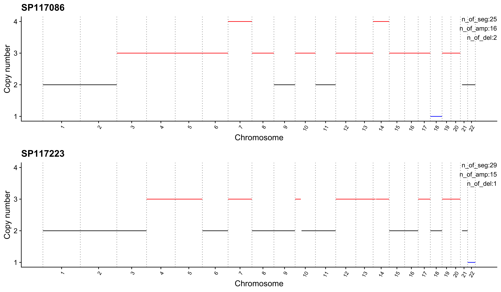
Most enriched in Sig11
sample Sig1 Sig2 Sig3 Sig4 Sig5 Sig6 Sig7 Sig8 Sig9 Sig10 Sig11
1: SP11235 0.047 0.030 0.051 0.140 0.046 0.002 0.051 0.028 0.056 0.065 0.485
2: SP112194 0.073 0.128 0.003 0.032 0.031 0.054 0.032 0.091 0.012 0.060 0.484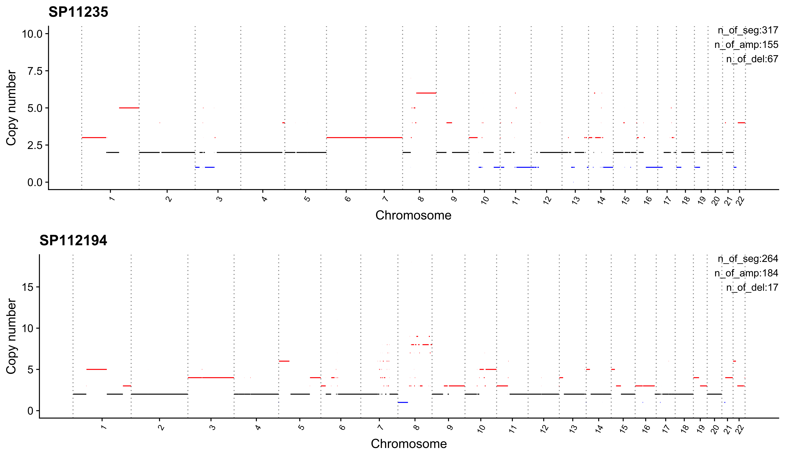
Ideograph for copy number profile reconstruction
TODO: select one/two samples and draw copy number profile -> catalog profile -> signature relative activity. Similar to Nature paper.
PART 3: Pan-Cancer signature analysis
In this part, we will analyze copy number signatures across cancer types and show the landscape.
Signature number and contribution in each cancer type
Load tidy cancer type annotation data.
library(sigminer)
library(tidyverse)
pcawg_types <- readRDS("../data/pcawg_type_info.rds")To better describe the copy number signature landscape, here we use refitting activity data obtained from bootstrap procedure (see section “Reliable signature activity attribution” in PART 1).
pcawg_activity <- readRDS("../data/pcawg_cn_sigs_CN176_activity.rds")Combine the cancer type annotation and activity data and only keep samples with good reconstruction (>0.75 cosine similarity).
keep_samps <- pcawg_activity$similarity >= 0.75
df_abs <- merge(pcawg_activity$abs_activity[keep_samps], pcawg_types, by = "sample")
df_rel <- merge(pcawg_activity$rel_activity[keep_samps], pcawg_types, by = "sample")Signature activity in each cancer type
Here we draw distribution of a signature across cancer types.
show_group_distribution(
df_abs,
gvar = "cancer_type",
dvar = "Sig1",
order_by_fun = FALSE,
g_angle = 90,
point_size = 0.3
)
We have many signatures here, so we output them to PDF files.
dir.create("../output/cancer-type-dist", showWarnings = F)
signames <- paste0("Sig", 1:11)
for (i in signames) {
pxx <- show_group_distribution(df_abs,
gvar = "cancer_type",
dvar = i, order_by_fun = FALSE,
ylab = i,
g_angle = 90, point_size = 0.3
)
ggplot2::ggsave(file.path("../output/cancer-type-dist/", paste0("Absolute_activity_", i, ".pdf")),
plot = pxx, width = 12, height = 6
)
pxx <- show_group_distribution(df_rel,
gvar = "cancer_type",
dvar = i, order_by_fun = FALSE,
ylab = i,
g_angle = 90, point_size = 0.3
)
ggplot2::ggsave(file.path("../output/cancer-type-dist/", paste0("Relative_activity_", i, ".pdf")),
plot = pxx, width = 12, height = 6
)
}
rm(pxx)Signature landscape
Define a signature which is detectable if this signature contribute >5% exposures in a sample.
df <- df_rel %>%
dplyr::mutate_at(dplyr::vars(dplyr::starts_with("Sig")), ~ ifelse(. > 0.05, 1L, 0L)) %>%
tidyr::pivot_longer(
cols = dplyr::starts_with("Sig"),
names_to = "sig", values_to = "detectable"
)
df2 <- df_rel %>%
tidyr::pivot_longer(
cols = dplyr::starts_with("Sig"),
names_to = "sig", values_to = "expo"
)
df <- dplyr::left_join(df, df2,
by = c("sample", "cancer_type", "sig")
)
df_type <- df %>%
dplyr::group_by(cancer_type, sig) %>%
dplyr::summarise(
freq = sum(detectable), # directly use count
expo = median(expo[detectable == 1]),
n = n(),
label = paste0(unique(cancer_type), " (n=", n, ")"),
.groups = "drop"
)
mps <- unique(df_type[, c("cancer_type", "label")])
mpss <- mps$label
names(mpss) <- mps$cancer_typesummary(df_type$freq) Min. 1st Qu. Median Mean 3rd Qu. Max.
0.00 6.00 15.00 30.42 36.00 247.00 Show copy number signature landscape.
library(cowplot)
p <- ggplot(
df_type,
aes(x = cancer_type, y = factor(sig, levels = paste0("Sig", 1:11)))
) +
geom_point(aes(size = freq, color = expo)) +
theme_cowplot() +
ggpubr::rotate_x_text(60) +
scale_x_discrete(breaks = mps$cancer_type, labels = mps$label) +
scale_size_continuous(
limits = c(5, 250),
breaks = c(5, 20, 50, 100, 200)
) +
scale_color_stepsn(
colors = viridis::viridis(5, direction = -1),
breaks = c(0, 0.25, 0.5, 0.75, 1)
) +
labs(
x = NULL, y = "Copy number signatures",
color = "Median activity\ndue to signature",
size = "Tumors with\nthe signature"
)
p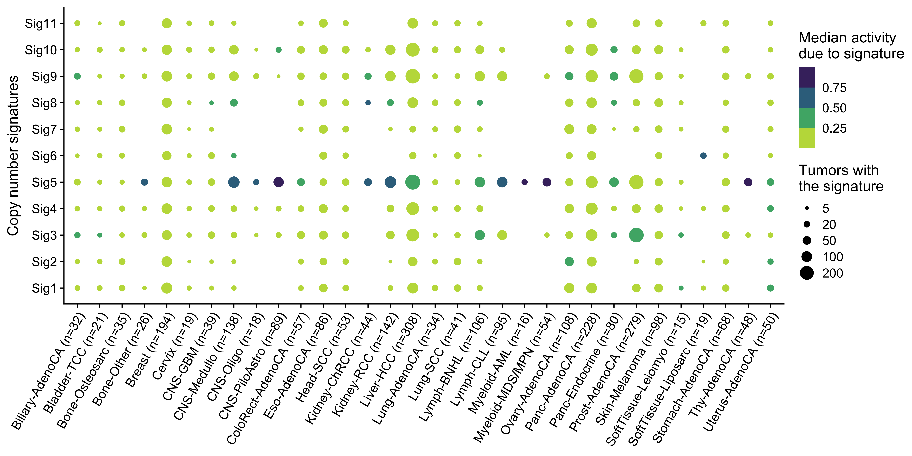
ggsave("../output/CNS_PCAWG_landscape.pdf",
plot = p,
height = 6, width = 12
)Cancer type associated enrichment
Run enrichment analysis.
enrich_result <- group_enrichment(
df_abs,
grp_vars = "cancer_type",
enrich_vars = paste0("Sig", 1:11),
co_method = "wilcox.test"
)Show enrichment landscape.
enrich_result$enrich_var <- factor(enrich_result$enrich_var, paste0("Sig", 1:11))
p <- show_group_enrichment(enrich_result, fill_by_p_value = TRUE, return_list = T)
p <- p$cancer_type + labs(x = NULL, y = NULL)
p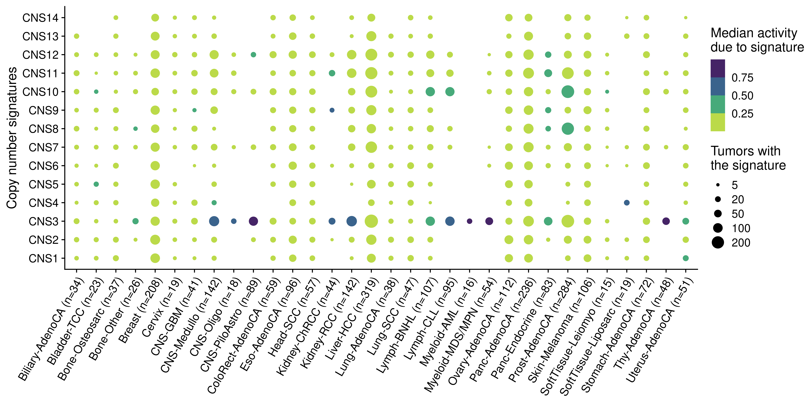
ggsave("../output/CNS_PCAWG_enrichment_landscape.pdf",
plot = p,
height = 8, width = 6
)To better visualize the enrichment results, we use binned color regions.
p <- show_group_enrichment(
enrich_result,
fill_by_p_value = TRUE,
cut_p_value = TRUE,
return_list = T
)
p <- p$cancer_type + labs(x = NULL, y = NULL)
p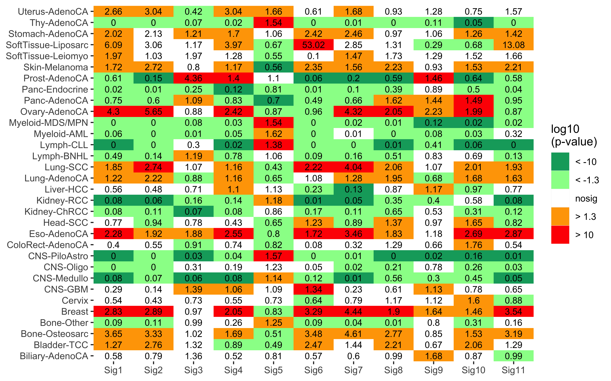
ggsave("../output/CNS_PCAWG_enrichment_landscape2.pdf",
plot = p,
height = 8, width = 6
)We see cancer type SoftTissue-Liposarc has pretty high enrichment on Sig6. Let’s check the enrichment result.
enrich_result[grp1 == "SoftTissue-Liposarc"] grp_var enrich_var grp1 grp2 grp1_size grp1_pos_measure
1: cancer_type Sig1 SoftTissue-Liposarc Rest 19 107.747229
2: cancer_type Sig2 SoftTissue-Liposarc Rest 19 45.210722
3: cancer_type Sig3 SoftTissue-Liposarc Rest 19 17.841799
4: cancer_type Sig4 SoftTissue-Liposarc Rest 19 53.524895
5: cancer_type Sig5 SoftTissue-Liposarc Rest 19 9.332606
grp2_size grp2_pos_measure measure_observed measure_tested p_value
1: 2621 17.690767 6.0905910 NA 2.618595e-02
2: 2621 14.791334 3.0565682 NA 5.269566e-01
3: 2621 15.222509 1.1720669 NA 7.519819e-02
4: 2621 13.483545 3.9696455 NA 1.051345e-03
5: 2621 14.027543 0.6653058 NA 2.968415e-02
type method
1: continuous wilcox.test
2: continuous wilcox.test
3: continuous wilcox.test
4: continuous wilcox.test
5: continuous wilcox.test
[ reached getOption("max.print") -- omitted 6 rows ]We can see mean activity 486 (n=19) vs 9 (n=2621).
Let’s go further plot the distribution for the two groups.
df_check <- df_abs[, c("Sig6", "cancer_type")][
, .(
cancer_type = ifelse(cancer_type == "SoftTissue-Liposarc",
"SoftTissue-Liposarc",
"Others"
),
Sig6 = Sig6
)
]ggpubr::ggboxplot(
df_check,
x = "cancer_type", y = "Sig6",
fill = "cancer_type",
xlab = FALSE, width = 0.3
)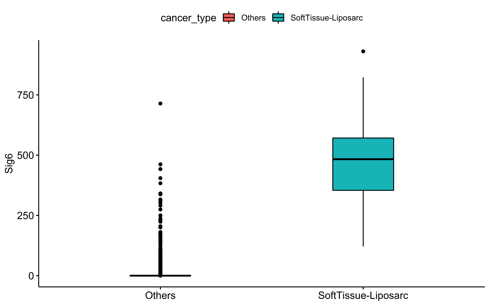 Check copy number distribution for the "SoftTissue-Liposarc" samples.
samples <- df_abs[cancer_type == "SoftTissue-Liposarc"]$sample
pcawg_cn_obj <- readRDS("../data/pcawg_cn_obj.rds")
cn_dt <- subset(pcawg_cn_obj@data, sample %in% samples)
cn_dt$segLen <- cn_dt$end - cn_dt$start + 1Copy number value:
boxplot(cn_dt$segVal)
Segment length:
boxplot(cn_dt$segLen)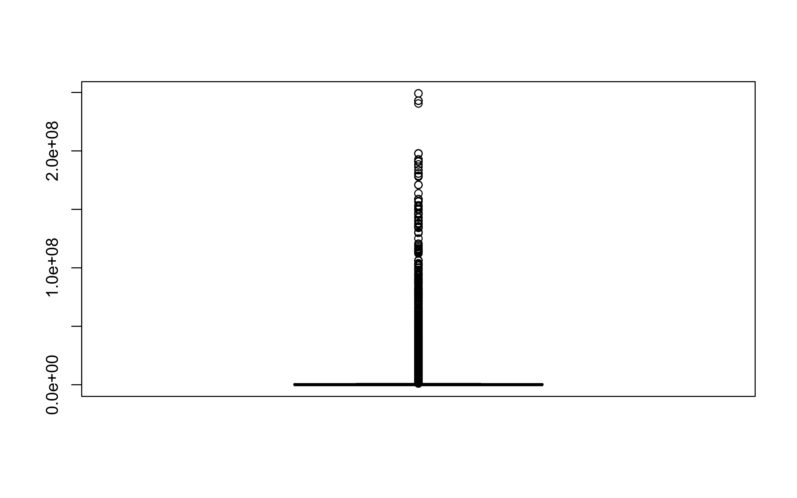
cn_dt_samp <- cn_dt[, .(nAMP = sum(segVal > 2)), by = sample]boxplot(cn_dt_samp$nAMP)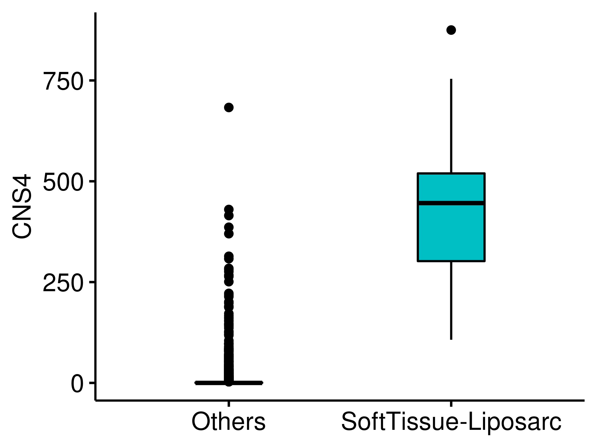
PART 4: Cancer subtyping and prognosis analysis
In this part, we would like to cluster all tumors based on CN signatures and use the clusters to explore Pan-Cancer heterogeneity.
Data integration
Many raw data have been processed by tools (or collected) and cleaned. This part I mainly describe how to combine them to construct the integrated dataset.
If you care about the data (source) shown below, please check the last section of PART 0.
library(pacman)
p_load(
tidyverse,
data.table,
sigminer,
IDConverter
)Load pre-processed data.
pcawg_cn_obj <- readRDS("../data/pcawg_cn_obj.rds")
pcawg_cn_sig <- readRDS("../data/pcawg_cn_sigs_CN176_signature.rds")
pcawg_samp_info_sp <- readRDS("../data/pcawg_samp_info_sp.rds")
samp_summary <- pcawg_cn_obj@summary.per.sample
samp_summary$n_loh <- NULLCheck if all samples are recorded.
all(pcawg_cn_obj@summary.per.sample$sample %in% pcawg_samp_info_sp$pcawg_specimen_histology_August2016_v9$icgc_specimen_id)pcawg_samp_info_sp <- lapply(pcawg_samp_info_sp, function(x) {
colnames(x)[1] <- "sample"
x
})
pcawg_samp_info <- purrr::reduce(pcawg_samp_info_sp, dplyr::full_join, by = "sample")
pcawg_samp_info <- pcawg_samp_info %>% dplyr::filter(sample %in% pcawg_cn_obj@summary.per.sample$sample)
rm(pcawg_samp_info_sp)Refer to PCAWG Mutational Signatures Working Group et al. (2020), some cancer types with small sample size should be combined.
table(pcawg_samp_info$histology_abbreviation)pcawg_samp_info <- pcawg_samp_info %>%
mutate(
cancer_type = case_when(
startsWith(histology_abbreviation, "Breast") ~ "Breast",
startsWith(histology_abbreviation, "Biliary-AdenoCA") ~ "Biliary-AdenoCA",
histology_abbreviation %in% c("Bone-Epith", "Bone-Benign") ~ "Bone-Other",
startsWith(histology_abbreviation, "Cervix") ~ "Cervix",
histology_abbreviation %in% c("Myeloid-AML, Myeloid-MDS", "Myeloid-AML, Myeloid-MPN", "Myeloid-MDS", "Myeloid-MPN") ~ "Myeloid-MDS/MPN",
TRUE ~ histology_abbreviation
)
)Select important features.
pcawg_samp_info <- pcawg_samp_info %>%
dplyr::select(c(
"sample", "_PATIENT", "donor_sex", "donor_age_at_diagnosis",
"donor_survival_time", "donor_vital_status", "first_therapy_type",
"tobacco_smoking_history_indicator", "alcohol_history",
"dcc_project_code", "dcc_specimen_type",
"histology_abbreviation", "cancer_type",
"tumour_stage",
"level_of_cellularity"
))
colnames(pcawg_samp_info)[2] <- "donor_id"
# Remove duplicated samples
pcawg_samp_info <- pcawg_samp_info[!duplicated(pcawg_samp_info$sample), ]Get signature activities.
pcawg_activity <- readRDS("../data/pcawg_cn_sigs_CN176_activity.rds")
expo_abs <- pcawg_activity$abs_activity[, lapply(.SD, function(x) if (is.numeric(x)) round(x, digits = 3) else x)]
colnames(expo_abs) <- c("sample", paste0("Abs_", colnames(expo_abs)[-1]))
expo_rel <- pcawg_activity$rel_activity[, lapply(.SD, function(x) if (is.numeric(x)) round(x, digits = 3) else x)]
colnames(expo_rel) <- c("sample", paste0("Rel_", colnames(expo_rel)[-1]))
pcawg_activity2 <- dplyr::left_join(expo_abs, expo_rel, by = "sample")
pcawg_activity2$similarity <- pcawg_activity$similarity
pcawg_activity <- pcawg_activity2
pcawg_activity$keep <- pcawg_activity$similarity >= 0.75
rm(pcawg_activity2, expo_abs, expo_rel)Read tumor purity & ploidy & WGD status.
dt_pp <- fread("../data/PCAWG/consensus.20170217.purity.ploidy_sp")
dt_pp <- dt_pp[, c("samplename", "purity", "ploidy", "wgd_status")]
colnames(dt_pp)[1] <- "sample"Calculate fusion events in all samples.
fusion <- fread("../data/PCAWG/pcawg3_fusions_PKU_EBI.gene_centric.sp.xena")
fusion <- as.matrix(fusion[, -1])
fusion <- apply(fusion, 2, sum)
fusion <- dplyr::tibble(
sample = names(fusion),
n_fusion = as.numeric(fusion)
)Load HRD status in all samples.
HRD <- readRDS("../data/PCAWG/pcawg_CHORD.rds")
HRD <- HRD %>%
dplyr::select(icgc_specimen_id, is_hrd, genotype_monoall) %>%
set_names(c("sample", "hrd_status", "hrd_genotype")) %>%
unique()Read LOH data.
LOH <- readRDS("../data/pcawg_loh.rds")Read Chromothripsis data and clean it.
# http://compbio.med.harvard.edu/chromothripsis/
chromothripsis <- fread("../data/PCAWG/PCAWG-ShatterSeek.txt.gz")
chromothripsis <- chromothripsis[, c("icgc_donor_id", "type_chromothripsis", "chromo_label")]
# Check label
table(chromothripsis$chromo_label)
any(is.na(chromothripsis$chromo_label))
# Summarize
chromothripsis_summary <- chromothripsis[
, .(
n_chromo = sum(chromo_label != "No"),
chromo_type = paste0(na.omit(type_chromothripsis), collapse = "/")
),
by = icgc_donor_id
]
chromothripsis_summary <- merge(chromothripsis_summary, pcawg_full[, c("icgc_donor_id", "icgc_specimen_id")],
by = "icgc_donor_id"
) %>% unique()
chromothripsis_summary$icgc_donor_id <- NULL
colnames(chromothripsis_summary)[3] <- "sample"
rm(chromothripsis)Read AmpliconArchitect results.
aa1 <- readxl::read_excel("../data/PCAWG/ecDNA.xlsx", skip = 1)
aa2 <- readxl::read_excel("../data/PCAWG/ecDNA.xlsx", sheet = 3)
table(aa1$amplicon_classification)
table(aa2$sample_classification)
all(aa1$sample_barcode %in% aa2$sample_barcode)
aa_summary <- aa1 %>%
dplyr::group_by(sample_barcode) %>%
dplyr::summarise(
n_amplicon_BFB = sum(amplicon_classification == "BFB", na.rm = TRUE),
n_amplicon_ecDNA = sum(amplicon_classification == "Circular", na.rm = TRUE),
n_amplicon_HR = sum(amplicon_classification == "Heavily-rearranged", na.rm = TRUE),
n_amplicon_Linear = sum(amplicon_classification == "Linear", na.rm = TRUE),
.groups = "drop"
)
data.table::setDT(aa_summary)
custom_dt <- IDConverter::pcawg_simple[, c("submitted_specimen_id", "icgc_specimen_id")]
custom_dt <- custom_dt[startsWith(submitted_specimen_id, "TCGA")]
custom_dt[, submitted_specimen_id := substr(submitted_specimen_id, 1, 15)]
aa_summary[
, sample := ifelse(
startsWith(sample_barcode, "SA"),
convert_pcawg(sample_barcode, from = "icgc_sample_id", to = "icgc_specimen_id"),
convert_custom(sample_barcode, from = "submitted_specimen_id", to = "icgc_specimen_id", dt = custom_dt)
)
]
## Filter out samples not in PCAWG
aa_summary <- aa_summary[!is.na(sample)][, sample_barcode := NULL]
rm(aa1, aa2, custom_dt)Read TelomereHunter results.
TC <- readxl::read_excel("../data/PCAWG/TelomereContent.xlsx")
TC <- TC %>% dplyr::select(c("icgc_specimen_id", "tel_content_log2"))
colnames(TC)[1] <- "sample"
data.table::setDT(TC)apobec <- read_tsv("../data/PCAWG/MAF_Aug31_2016_sorted_A3A_A3B_comparePlus.txt", col_types = cols())
apobec <- apobec %>%
dplyr::select(c(1, 5)) %>%
data.table::as.data.table() %>%
setNames(c("sample", "APOBEC_mutations"))Combine and save result combined data.
pcawg_samp_info <- purrr::reduce(list(
pcawg_samp_info,
pcawg_activity,
samp_summary,
dt_pp,
fusion,
HRD,
LOH,
chromothripsis_summary,
aa_summary,
TC,
apobec
),
dplyr::left_join,
by = "sample"
)
saveRDS(pcawg_samp_info, file = "../data/pcawg_sample_tidy_info.rds")
## Remove all objects
rm(list = ls())Clustering with signature activity
Here, we use recent consensus clustering toolkit cola.
We take 2 steps to obtain a robust clustering result:
- We sort all samples by their total signature activities and randomly select
500samples for running multiple methods provided bycolaat the same time, then pick up the optimal method combination. - We run clustering for all samples by the method combination above and check the cola report to determine the suitable cluster number.
Step 1: select suitable method combination
There are 2 key arguments in cola clustering function:
top_value_method: used to extract rows (i.e. signatures here) with top values.partition_method: used to select partition method.
We try all combinations with randomly selected 500 samples to explore the suitable setting.
library(cola)
library(tidyverse)
df <- readRDS("../data/pcawg_sample_tidy_info.rds")
mat_abs <- df %>%
filter(keep) %>%
select(sample, starts_with("Abs_Sig")) %>%
column_to_rownames("sample") %>%
t()
mat_abs <- adjust_matrix(mat_abs)
rownames(mat_abs)
# Select suitable parameters ----------------------------------------------
ds <- colSums(mat_abs)
boxplot(ds)
set.seed(123)
select_samps <- sample(names(sort(ds)), 500)
boxplot(ds[select_samps])
rl_abs <- run_all_consensus_partition_methods(mat_abs[, select_samps], top_n = 10, mc.cores = 8, max_k = 10)
cola_report(rl_abs, output_dir = "../output/cola_report/pcawg_abs_sigs_500_sampls", mc.cores = 8)The cola output report is very big and isn’t suitable to show, here I only include key figures to determine the parameter setting.
# Cluster number 2
knitr::include_graphics("cola-test-figs/tab-collect-stats-from-consensus-partition-list-1-1.png")
# Cluster number 3
knitr::include_graphics("cola-test-figs/tab-collect-stats-from-consensus-partition-list-2-1.png")
# Cluster number 4
knitr::include_graphics("cola-test-figs/tab-collect-stats-from-consensus-partition-list-3-1.png")
# Cluster number 5
knitr::include_graphics("cola-test-figs/tab-collect-stats-from-consensus-partition-list-4-1.png")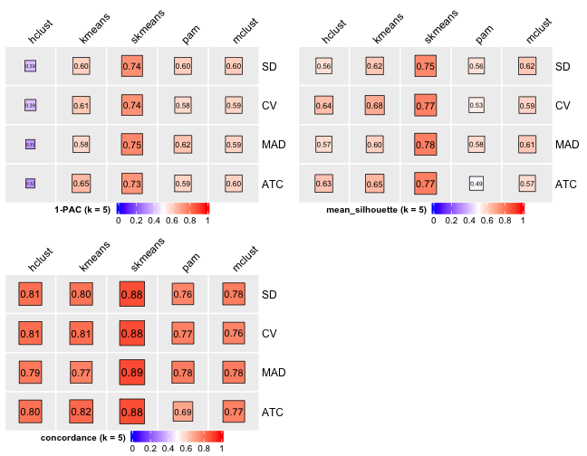
# Cluster number 6
knitr::include_graphics("cola-test-figs/tab-collect-stats-from-consensus-partition-list-5-1.png")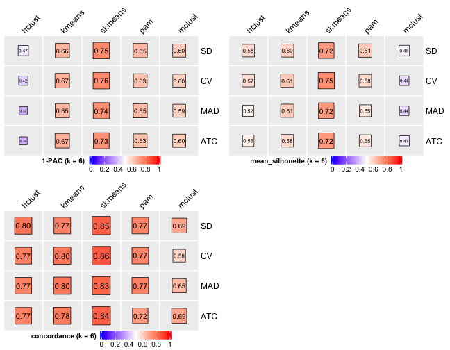
# Cluster number 7
knitr::include_graphics("cola-test-figs/tab-collect-stats-from-consensus-partition-list-6-1.png")
# Cluster number 8
knitr::include_graphics("cola-test-figs/tab-collect-stats-from-consensus-partition-list-7-1.png")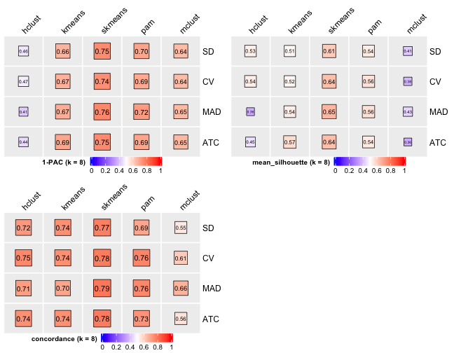
# Cluster number 9
knitr::include_graphics("cola-test-figs/tab-collect-stats-from-consensus-partition-list-8-1.png")
# Cluster number 10
knitr::include_graphics("cola-test-figs/tab-collect-stats-from-consensus-partition-list-9-1.png")
Step 2: select suitable cluster number
From figures above we do clearly see that the skmeans partition method fits our data and any top_value_method is okay. Finally, we choose combine skmeans (partition method) and ATC (top value method introduced firstly by cola) to run clustering for all samples.
final_abs <- run_all_consensus_partition_methods(
mat_abs,
top_value_method = "ATC",
partition_method = "skmeans",
top_n = 10, mc.cores = 8, max_k = 10
)
cola_report(final_abs, output_dir = "../output/cola_report/pcawg_abs_sigs_all_sampls_final", mc.cores = 8)The report can be viewed at here.
Next, we will load the data and visualize to select suitable cluster number.
library(cola)
library(ComplexHeatmap)
library(tidyverse)
cluster_res <- readRDS("../data/pcawg_cola_result.rds")
cluster_res <- cluster_res["ATC", "skmeans"]
cluster_resA 'ConsensusPartition' object with k = 2, 3, 4, 5, 6, 7, 8, 9, 10.
On a matrix with 10 rows and 2640 columns.
Top rows (10) are extracted by 'ATC' method.
Subgroups are detected by 'skmeans' method.
Performed in total 450 partitions by row resampling.
Best k for subgroups seems to be 2.
Following methods can be applied to this 'ConsensusPartition' object:
[1] "cola_report" "collect_classes"
[3] "collect_plots" "collect_stats"
[5] "colnames" "compare_signatures"
[7] "consensus_heatmap" "dimension_reduction"
[9] "functional_enrichment" "get_anno_col"
[11] "get_anno" "get_classes"
[13] "get_consensus" "get_matrix"
[15] "get_membership" "get_param"
[17] "get_signatures" "get_stats"
[19] "is_best_k" "is_stable_k"
[21] "membership_heatmap" "ncol"
[23] "nrow" "plot_ecdf"
[25] "predict_classes" "rownames"
[27] "select_partition_number" "show"
[29] "suggest_best_k" "test_to_known_factors" Show different statistics along with different cluster number k, which helps to determine the “best k.”
select_partition_number(cluster_res)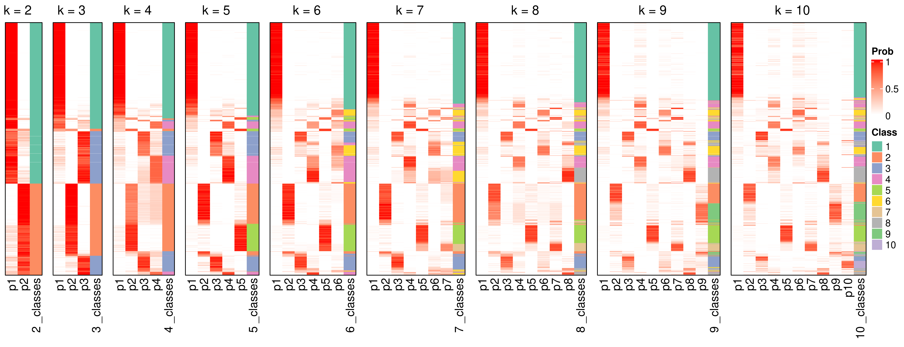 There are many details about all statistical measures shown above at cola vignette. The best k 2 is suggested by cola package due to its better statistical measures. However, in this practice, I think 3 or 6 is more suitable. I have the following strong reasons.
The reasons for k = 3:
- Measure
1 - PACreaches a local maximal atk = 3which indicates the subgroups are less due to ambiguously assigned. - Measure
area_increaseddrops sharply atk = 3which indicates increasingkwon’t change the consensus matrix too much. - Measure
Jaccardincreases significantly atk = 3which indicate the subgroups atk = 4are highly similar ask = 3.
The reasons for k = 6:
- Measure
1 - PACreaches top value atk = 6. - Measure
Jaccardincreases significantly atk = 6which indicate the subgroups atk = 7are highly similar ask = 6. - Measure
Silhouettestart dropping atk = 6.
I will draw another plot to show why the two ks are suitable.
collect_classes(cluster_res)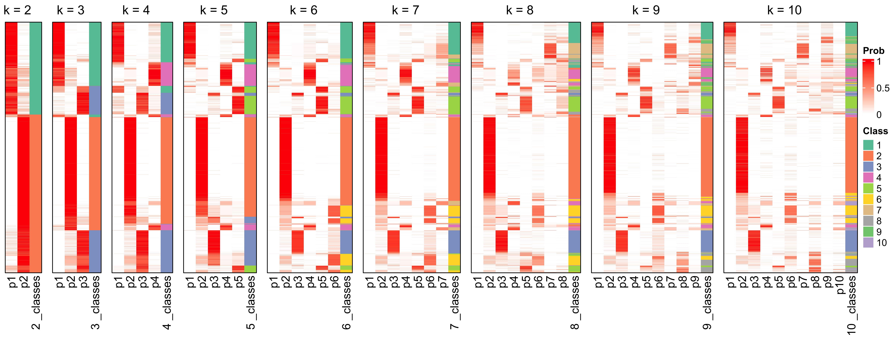 We can see that subgroups for k = 3, 4, 5 are similar and subgroups for k = 6, 7, 8, 9, 10 are similar.
Draw all plots into one single page.
pdf(file = "../output/cola_all_plots.pdf", width = 16, height = 10)
collect_plots(cluster_res)
dev.off()Now we get the cluster labels of samples for downstream analysis.
pcawg_clusters <- get_classes(cluster_res, k = c(3, 6))
saveRDS(pcawg_clusters, file = "../data/pcawg_clusters.rds")Heatmap for clustering and genotype/phenotype features
Load tidy sample info.
tidy_info <- readRDS("../data/pcawg_sample_tidy_info.rds")Clean some info.
detect_any <- function(x, p) {
if (length(p) == 1L) {
y <- stringr::str_detect(x, p)
} else {
y <- purrr::map(p, ~ stringr::str_detect(x, .))
y <- purrr::reduce(y, `|`)
}
y[is.na(y)] <- FALSE
y
}
tidy_info <- tidy_info %>%
dplyr::mutate(
# Roughly reassign the staging to TNM stages
# Basically follow 7th TNM staging version, see plot <https://bkimg.cdn.bcebos.com/pic/a8014c086e061d952019ec8773f40ad162d9ca36?x-bce-process=image/watermark,image_d2F0ZXIvYmFpa2U4MA==,g_7,xp_5,yp_5>
#
# Other references:
# https://www.cancer.org/treatment/understanding-your-diagnosis/staging.html
# https://www.cancer.gov/publications/dictionaries/cancer-terms/def/abcd-rating
# https://web.archive.org/web/20081004121942/http://www.oncologychannel.com/prostatecancer/stagingsystems.shtml
# https://baike.baidu.com/item/TNM%E5%88%86%E6%9C%9F%E7%B3%BB%E7%BB%9F/10700513
tumour_stage = case_when(
tumour_stage %in% c("1", "1a", "1b", "A", "I", "IA", "IB", "T1c", "T1N0") | detect_any(tumour_stage, c("T1N0M0", "T1aN0M0", "T1bN0M0", "T2aN0M0")) ~ "I",
tumour_stage %in% c("2", "2a", "2b", "B", "II", "IIA", "IIB", "T3a", "T3aN0") | detect_any(tumour_stage, c("T2bN0M0", "T3N0M0", "T[^34]N1.*M0")) ~ "II",
tumour_stage %in% c("3", "3a", "3b", "3c", "C", "III", "IIIA", "IIIB", "IIIC") | detect_any(tumour_stage, c("N[23].*M0", "T3N1.*M0", "T4.*M0")) ~ "III",
tumour_stage %in% c("4", "IV", "IVA") | detect_any(tumour_stage, "M[^0X]") ~ "IV",
TRUE ~ "Unknown"
),
first_therapy_type = ifelse(first_therapy_type == "monoclonal antibodies (for liquid tumours)",
"other therapy", first_therapy_type
)
)Generate annotation data for plotting.
anno_df <- tidy_info %>%
dplyr::filter(keep) %>%
dplyr::select(
sample,
donor_age_at_diagnosis, n_of_amp, n_of_del, n_of_vchr, cna_burden, purity, ploidy,
n_LOH, n_fusion, n_chromo, n_amplicon_BFB, n_amplicon_ecDNA, n_amplicon_HR, n_amplicon_Linear,
tel_content_log2,
donor_sex, tumour_stage, wgd_status, hrd_status
) %>%
dplyr::mutate_at(
vars(n_fusion, n_chromo, n_amplicon_BFB, n_amplicon_ecDNA, n_amplicon_HR, n_amplicon_Linear),
~ ifelse(is.na(.), 0, .)
) %>%
dplyr::mutate(hrd_status = ifelse(hrd_status, "hrd", "no_hrd")) %>%
rename(
Age = donor_age_at_diagnosis,
AMPs = n_of_amp,
DELs = n_of_del,
Affected_Chrs = n_of_vchr,
CNA_Burden = cna_burden,
Purity = purity,
Ploidy = ploidy,
LOHs = n_LOH,
Fusions = n_fusion,
Chromothripsis = n_chromo,
BFBs = n_amplicon_BFB,
ecDNAs = n_amplicon_ecDNA,
HRs = n_amplicon_HR,
Linear_Amplicons = n_amplicon_Linear,
`Telomere_Content(log2)` = tel_content_log2,
Sex = donor_sex,
Tumor_Stage = tumour_stage,
WGD_Status = wgd_status,
HRD_Status = hrd_status
) %>%
tibble::column_to_rownames("sample")
saveRDS(anno_df, file = "../data/pcawg_tidy_anno_df.rds")
left_annotation <- rowAnnotation(foo = anno_text(paste0("Sig", c(1:4, 6:11))))Show heatmap for clusters based on signature activities.
get_signatures(cluster_res,
k = 6, silhouette_cutoff = 0.2, anno = anno_df,
left_annotation = left_annotation
)* 2522/2640 samples (in 6 classes) remain after filtering by silhouette (>= 0.2).
* cache hash: adc95c3acc3e95ec20e2157e35327ca3 (seed 888).
* calculating row difference between subgroups by Ftest.
* 10 signatures (100.0%) under fdr < 0.05, group_diff > 0.
* making heatmaps for signatures.
Save to file.
pdf(file = "../output/pcawg_cluster_heatmap.pdf", width = 22, height = 10, onefile = FALSE)
get_signatures(cluster_res, k = 6, silhouette_cutoff = 0.2, anno = anno_df, left_annotation = left_annotation)
dev.off()Considering the results of 6 clusters gives confident labels for >90% samples and thus there is no need to use 3 clusters in this study.
Exploration of patients’ prognosis difference across clusters
Clean data for survival analysis
library(ezcox)
library(tidyverse)
cluster_df <- readRDS("../data/pcawg_clusters.rds") %>%
as.data.frame() %>%
tibble::rownames_to_column("sample")
tidy_info <- readRDS("../data/pcawg_sample_tidy_info.rds")
df_os <- tidy_info %>%
dplyr::filter(keep) %>%
dplyr::select(sample, donor_vital_status, donor_survival_time) %>%
purrr::set_names(c("sample", "os", "time")) %>%
na.omit() %>%
mutate(os = ifelse(os == "deceased", 1, 0)) %>%
left_join(cluster_df, by = "sample")
colnames(df_os)[5] <- "cluster"
# Use the group with minimal CNV level as reference group
df_os$cluster <- paste0("subgroup", df_os$cluster)
df_os$cluster <- factor(df_os$cluster, levels = paste0("subgroup", c(2, 1, 3:6)))Available sample number with OS data:
nrow(df_os)[1] 1669Forest plot
It’s pretty easy to visualize the relationship between subgroups and patient’s prognosis with forest plot by R package ezcox developed by me before.
show_forest(df_os, covariates = "cluster", status = "os", add_caption = FALSE, merge_models = TRUE)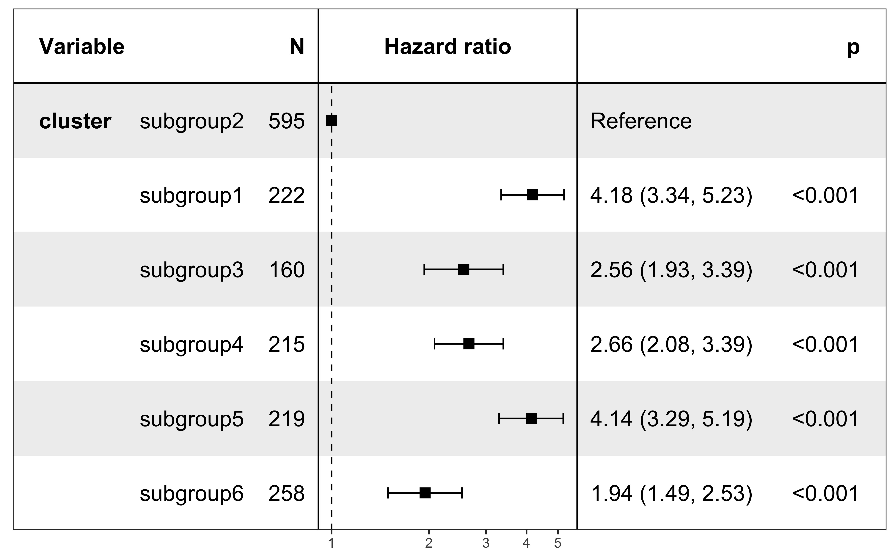
K-M plot
We can also check the OS difference with K-M plot.
library(survival)
library(survminer)sfit <- survfit(Surv(time, os) ~ cluster, data = df_os)
ggsurvplot(sfit, pval = TRUE)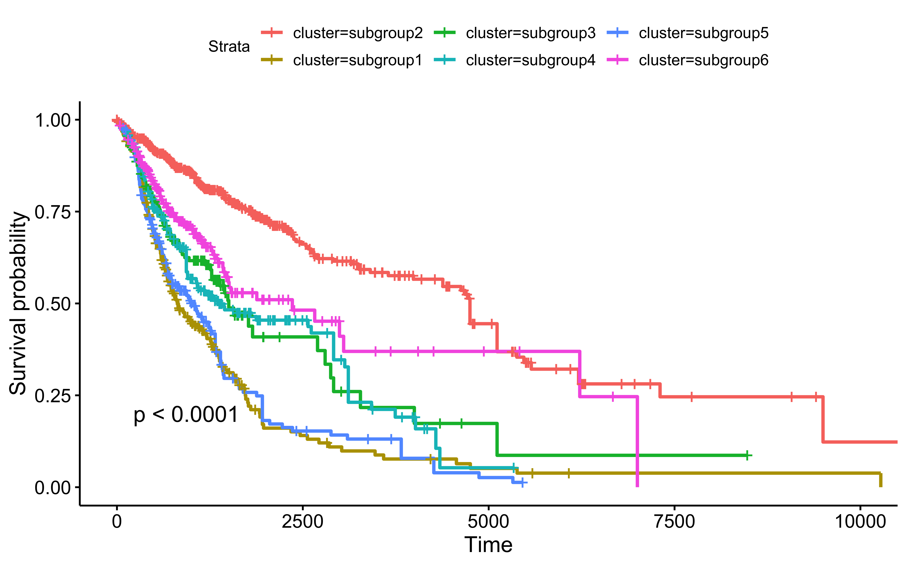
The result has similar meaning as forest plot.
The difference of genotype/phenotype measures across clusters
Signatures
Load SBS/DBS/ID signature activities generated from PCAWG Nature Study.
pcawg_sbs <- read_csv("../data/PCAWG/PCAWG_sigProfiler_SBS_signatures_in_samples.csv")
pcawg_dbs <- read_csv("../data/PCAWG/PCAWG_sigProfiler_DBS_signatures_in_samples.csv")
pcawg_id <- read_csv("../data/PCAWG/PCAWG_SigProfiler_ID_signatures_in_samples.csv")Merge data.
df_merged <- purrr::reduce(
list(
tidy_info,
pcawg_sbs[, -c(1, 3)] %>% dplyr::rename(sample = `Sample Names`) %>%
# Drop Possible sequencing artefact associated signatures
dplyr::select(-SBS43, -c(SBS45:SBS60)),
pcawg_dbs[, -c(1, 3)] %>% dplyr::rename(sample = `Sample Names`),
pcawg_id[, -c(1, 3)] %>% dplyr::rename(sample = `Sample Names`),
cluster_df[, -2] %>% purrr::set_names(c("sample", "cluster"))
),
dplyr::left_join,
by = "sample"
) %>%
dplyr::filter(!is.na(cluster)) %>%
mutate(cluster = paste0("subgroup", cluster))
colnames(df_merged) <- gsub("Abs_", "", colnames(df_merged))Enrichment analysis for copy number signatures
library(sigminer)
enrich_result_cn <- group_enrichment(
df_merged,
grp_vars = "cluster",
enrich_vars = paste0("Sig", 1:11),
co_method = "wilcox.test"
)enrich_result_cn$enrich_var <- factor(enrich_result_cn$enrich_var, paste0("Sig", 1:11))
p <- show_group_enrichment(
enrich_result_cn,
fill_by_p_value = TRUE,
cut_p_value = TRUE,
return_list = T
)
p <- p$cluster + labs(x = NULL, y = NULL)
p + coord_flip()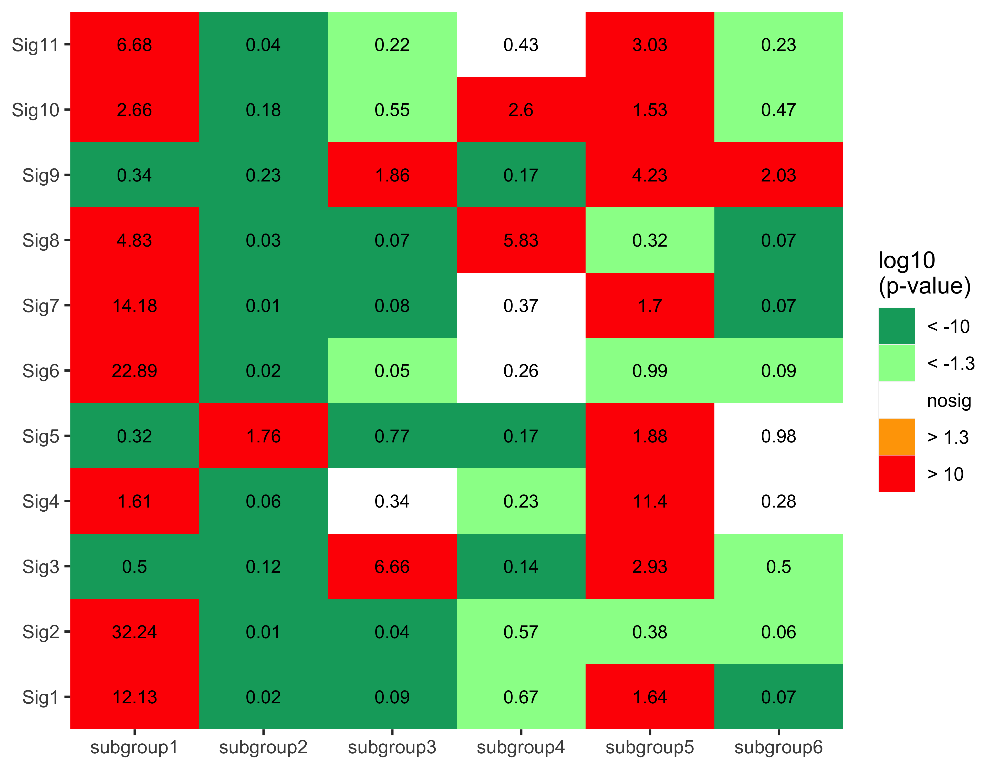
Enrichment analysis for SBS signatures
nm_sbs <- colnames(df_merged)[grepl("SBS", colnames(df_merged))]
enrich_result_sbs <- group_enrichment(
df_merged,
grp_vars = "cluster",
enrich_vars = nm_sbs,
co_method = "wilcox.test"
)enrich_result_sbs$enrich_var <- factor(enrich_result_sbs$enrich_var, nm_sbs)
p <- show_group_enrichment(
enrich_result_sbs,
fill_by_p_value = TRUE,
cut_p_value = TRUE,
return_list = T
)
p <- p$cluster + labs(x = NULL, y = NULL)
p + coord_flip()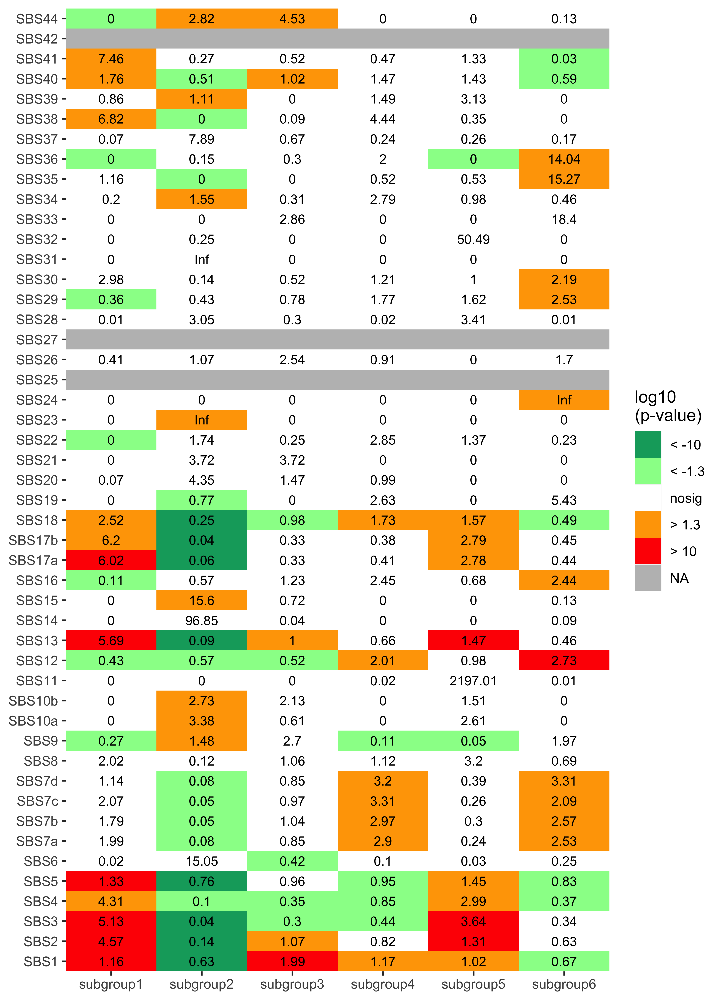
Enrichment analysis for DBS signatures
nm_dbs <- colnames(df_merged)[grepl("DBS", colnames(df_merged))]
enrich_result_dbs <- group_enrichment(
df_merged,
grp_vars = "cluster",
enrich_vars = nm_dbs,
co_method = "wilcox.test"
)enrich_result_dbs$enrich_var <- factor(enrich_result_dbs$enrich_var, nm_dbs)
p <- show_group_enrichment(
enrich_result_dbs,
fill_by_p_value = TRUE,
cut_p_value = TRUE,
return_list = T
)
p <- p$cluster + labs(x = NULL, y = NULL)
p + coord_flip()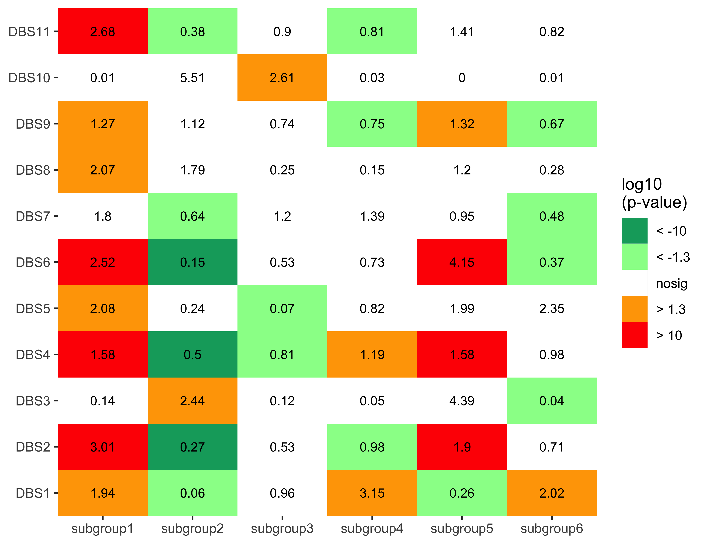
Enrichment analysis for ID signatures
nm_id <- colnames(df_merged)[grepl("^ID[0-9]+", colnames(df_merged))]
enrich_result_id <- group_enrichment(
df_merged,
grp_vars = "cluster",
enrich_vars = nm_id,
co_method = "wilcox.test"
)enrich_result_id$enrich_var <- factor(enrich_result_id$enrich_var, nm_id)
p <- show_group_enrichment(
enrich_result_id,
fill_by_p_value = TRUE,
cut_p_value = TRUE,
return_list = T
)
p <- p$cluster + labs(x = NULL, y = NULL)
p + coord_flip()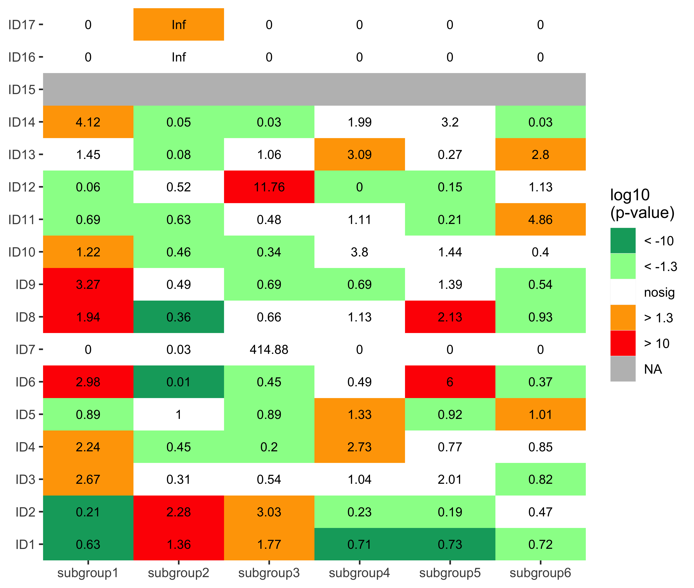
Combined COSMIC signature result
Merge all COSMIC signature results.
enrich_result_cosmic <- purrr::reduce(
list(enrich_result_sbs, enrich_result_dbs, enrich_result_id),
rbind
)移除带 NA 和 Inf 的 signatures 结果，然后绘制一个汇总图，对 signatures 进行聚类，以确定 signature 排序。
Word cloud plot for COSMIC signature etiologies
There are so many COSMIC signatures above, it is not easy to summarize the data. Considering all COSMIC signatures are labeled and many of them have been assigned to a specific etiology, here we try to use word cloud plot to summarize the result above.
Load etiologies of COSMIC signatures.
cosmic_ets <- purrr::reduce(
list(
sigminer::get_sig_db("SBS")$aetiology %>% tibble::rownames_to_column("sig_name"),
sigminer::get_sig_db("DBS")$aetiology %>% tibble::rownames_to_column("sig_name"),
sigminer::get_sig_db("ID")$aetiology %>% tibble::rownames_to_column("sig_name")
),
rbind
)DT::datatable(cosmic_ets)Generate a data.frame for plotting. We only keep significantly and positively enriched signatures in each subgroup. We note that descriptions for many signatures are too long, thus we use short names.
df_ets <- enrich_result_cosmic %>%
dplyr::filter(p_value < 0.05 & measure_observed > 1) %>%
dplyr::select(grp1, enrich_var) %>%
dplyr::left_join(cosmic_ets, by = c("enrich_var" = "sig_name")) %>%
dplyr::mutate(
aetiology = dplyr::case_when(
grepl("APOBEC", aetiology) ~ "APOBEC",
grepl("Tobacco", aetiology) ~ "Tobacco",
grepl("clock", aetiology) ~ "Clock",
grepl("Ultraviolet", aetiology, ignore.case = TRUE) ~ "UV",
grepl("homologous recombination", aetiology) ~ "HRD",
grepl("mismatch repair", aetiology) ~ "dMMR",
grepl("Slippage", aetiology) ~ "Slippage",
grepl("base excision repair", aetiology) ~ "dBER",
grepl("NHEJ", aetiology) ~ "NHEJ repair",
grepl("reactive oxygen", aetiology) ~ "ROS",
grepl("Polymerase epsilon exonuclease", aetiology) ~ "Polymerase epsilon mutation",
grepl("eta somatic hypermutation", aetiology) ~ "Polimerase eta hypermutation",
TRUE ~ aetiology
)
) %>%
dplyr::count(grp1, aetiology) %>%
dplyr::filter(!aetiology %in% c("Unknown", "Possible sequencing artefact"))Plotting.
library(ggwordcloud)
set.seed(42)
ggplot(df_ets, aes(label = aetiology, size = n)) +
geom_text_wordcloud_area(eccentricity = .35, shape = "square") +
scale_size_area(max_size = 14) +
facet_wrap(~grp1) +
theme_bw()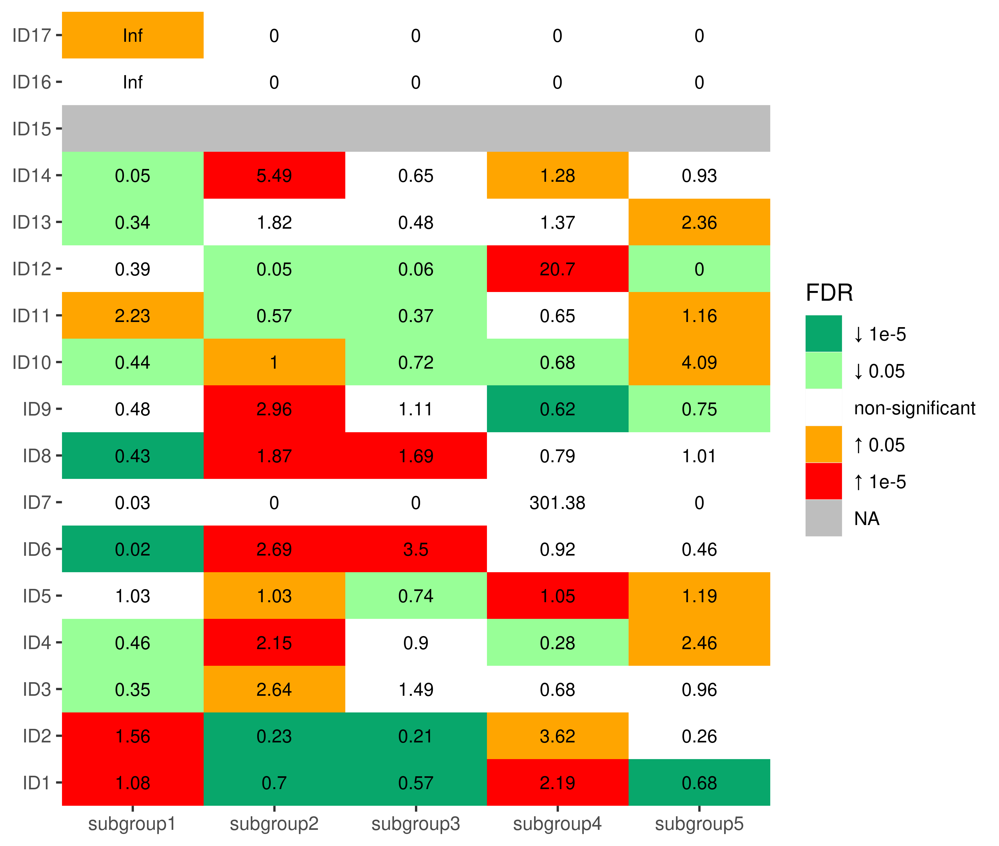
Other integrated variables
df_others <- readRDS("../data/pcawg_tidy_anno_df.rds") %>%
tibble::rownames_to_column("sample") %>%
dplyr::left_join(
cluster_df[, -2] %>% purrr::set_names(c("sample", "cluster")),
by = "sample"
) %>%
dplyr::mutate(
Tumor_Stage = dplyr::case_when(
Tumor_Stage == "I" ~ 1,
Tumor_Stage == "II" ~ 2,
Tumor_Stage == "III" ~ 3,
Tumor_Stage == "IV" ~ 4
),
isFemale = Sex == "female",
isWGD = WGD_Status == "wgd",
isHRD = HRD_Status == "hrd",
cluster = paste0("subgroup", cluster)
) %>%
dplyr::select(-c(Sex, WGD_Status, HRD_Status))nm_others <- setdiff(colnames(df_others), c("sample", "cluster"))
enrich_result_others <- group_enrichment(
df_others,
grp_vars = "cluster",
enrich_vars = nm_others,
co_method = "wilcox.test"
)enrich_result_others$enrich_var <- factor(enrich_result_others$enrich_var, nm_others)
p <- show_group_enrichment(
enrich_result_others,
fill_by_p_value = TRUE,
cut_p_value = TRUE,
return_list = T
)
p <- p$cluster + labs(x = NULL, y = NULL)
p + coord_flip()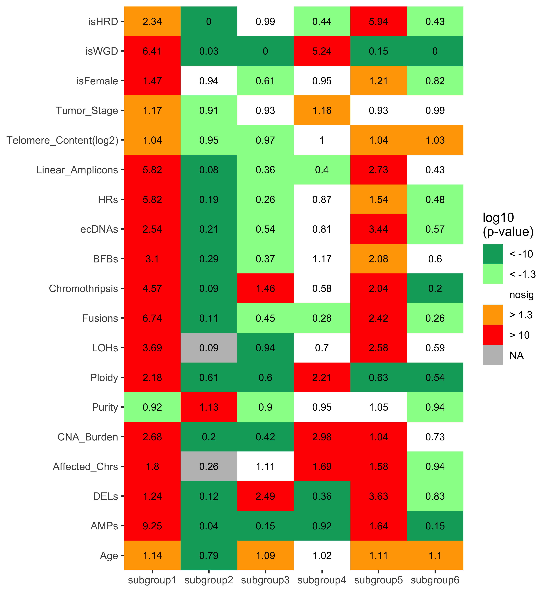
The
HRhere representsHeavily rearrangement, don’t mix it withHRDwhich meansDefective homologous recombination DNA damage repair.
Driver genes
We have already observed that there are different mutational processes across different groups. Here we try to go further study if different driver genes activate in different groups.
We obtained coding driver mutations from UCSC Xena database. For known driver genes, we focus on driver gene list obtained from Martínez-Jiménez et al. (2020).
load("../data/pcawg_driver_info.RData")
df_mut <- dplyr::left_join(df_others[, c("sample", "cluster")],
pcawg_driver_number,
by = "sample"
)
colnames(df_mut)[3] <- "Driver_variants"
df_mut$Driver_variants <- ifelse(is.na(df_mut$Driver_variants), 0, df_mut$Driver_variants)
driver_gene_num <- pcawg_driver_gene %>%
dplyr::group_by(sample, ROLE) %>%
dplyr::summarise(driver_genes = n(), .groups = "drop") %>%
tidyr::pivot_wider(names_from = "ROLE", values_from = "driver_genes", values_fill = 0)
df_mut <- dplyr::left_join(df_mut, driver_gene_num, by = "sample")
colnames(df_mut)[4:5] <- c("Act_genes", "LoF_genes")
df_mut$Act_genes <- ifelse(is.na(df_mut$Act_genes), 0, df_mut$Act_genes)
df_mut$LoF_genes <- ifelse(is.na(df_mut$LoF_genes), 0, df_mut$LoF_genes)Also merge into info of each driver gene.
df_mut2 <- df_mut %>%
dplyr::left_join(
pcawg_driver_gene %>%
tidyr::pivot_wider(names_from = "gene", values_from = "ROLE") %>%
dplyr::mutate_at(vars(-sample), ~ !is.na(.)),
by = "sample"
)
## Filter out driver genes with < 10 mutation
gene_sum <- sort(colSums(df_mut2[, -c(1:5)], na.rm = TRUE), decreasing = TRUE)
# 基因按突变数量排序
df_mut2 <- df_mut2 %>% dplyr::select_at(c(colnames(df_mut2)[1:5], names(gene_sum[gene_sum >= 10])))Save the data.
saveRDS(df_mut2, file = "../data/pcawg_mut_df.rds")nm_mut <- setdiff(colnames(df_mut2), c("sample", "cluster"))
enrich_result_mut <- group_enrichment(
df_mut2,
grp_vars = "cluster",
enrich_vars = nm_mut,
co_method = "wilcox.test"
)Filter out genes insignificant in all subgroups.
keep_df <- enrich_result_mut[, .(count = sum(p_value < 0.05)), by = enrich_var]
drop_vars <- keep_df[count == 0]$enrich_var
enrich_result_mut2 <- enrich_result_mut[!enrich_var %in% drop_vars]Plotting.
enrich_result_mut2$enrich_var <- factor(enrich_result_mut2$enrich_var, setdiff(nm_mut, drop_vars))
keep_vars <- setdiff(nm_mut, drop_vars)[-c(1:3)]
labels <- c(nm_mut[1:3], paste0(keep_vars, " (", gene_sum[keep_vars], ")"))
p <- show_group_enrichment(
enrich_result_mut2,
fill_by_p_value = TRUE,
cut_p_value = TRUE,
return_list = T
)
p <- p$cluster + labs(x = NULL, y = NULL)
p + coord_flip() + scale_x_discrete(labels = labels)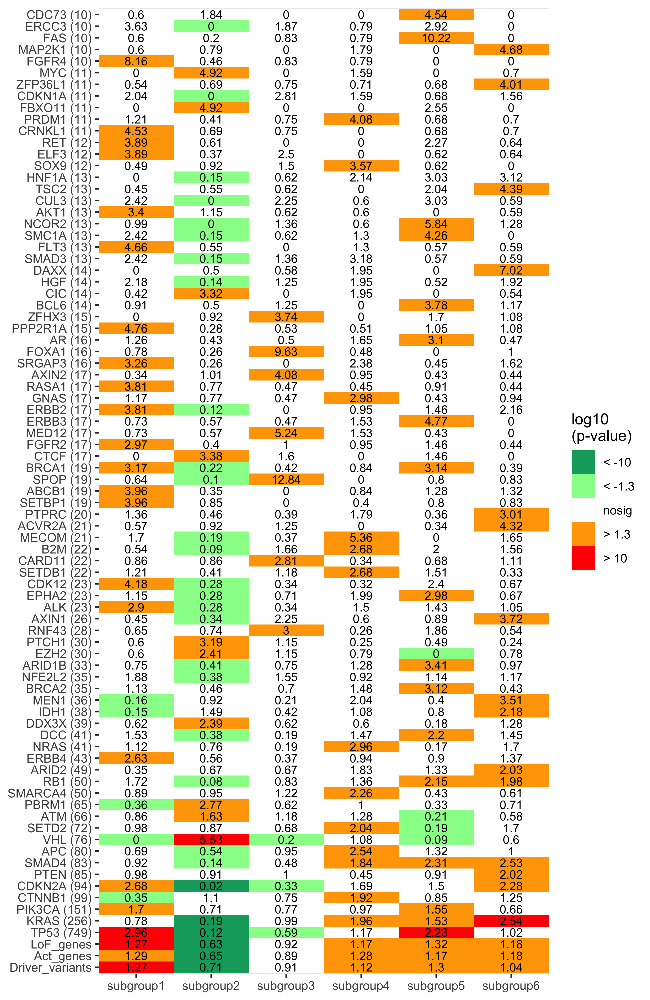
rm(list = ls())PART 5: Inference of copy number signature etiologies
In this part, we would like to explore CN signatures in more details with association analysis and summarize what we get to infer their etiologies.
Let’s merge load all data we got and combine them.
library(tidyverse)
library(sigminer)
tidy_info <- readRDS("../data/pcawg_sample_tidy_info.rds")
tidy_anno <- readRDS("../data/pcawg_tidy_anno_df.rds")
tidy_mut <- readRDS("../data/pcawg_mut_df.rds")
pcawg_sbs <- read_csv("../data/PCAWG/PCAWG_sigProfiler_SBS_signatures_in_samples.csv")
pcawg_dbs <- read_csv("../data/PCAWG/PCAWG_sigProfiler_DBS_signatures_in_samples.csv")
pcawg_id <- read_csv("../data/PCAWG/PCAWG_SigProfiler_ID_signatures_in_samples.csv")Merge data.
df_merged <- purrr::reduce(
list(
tidy_info %>%
dplyr::filter(keep) %>%
dplyr::select(sample, starts_with("Abs"), starts_with("Rel")),
tidy_anno %>%
tibble::rownames_to_column("sample") %>%
dplyr::mutate(
Tumor_Stage = dplyr::case_when(
Tumor_Stage == "I" ~ 1,
Tumor_Stage == "II" ~ 2,
Tumor_Stage == "III" ~ 3,
Tumor_Stage == "IV" ~ 4
),
isFemale = Sex == "female",
isWGD = WGD_Status == "wgd",
isHRD = HRD_Status == "hrd"
) %>%
dplyr::select(-c(Sex, WGD_Status, HRD_Status)),
pcawg_sbs[, -c(1, 3)] %>% dplyr::rename(sample = `Sample Names`) %>%
# Drop Possible sequencing artefact associated signatures
dplyr::select(-SBS43, -c(SBS45:SBS60)),
pcawg_dbs[, -c(1, 3)] %>% dplyr::rename(sample = `Sample Names`),
pcawg_id[, -c(1, 3)] %>% dplyr::rename(sample = `Sample Names`),
tidy_mut %>% dplyr::select(-cluster)
),
dplyr::left_join,
by = "sample"
) %>%
dplyr::mutate_if(
is.logical,
~ ifelse(is.na(.), FALSE, .)
)
colnames(df_merged) <- gsub("Abs_", "", colnames(df_merged))
saveRDS(df_merged, file = "../data/pcawg_merged_df.rds")Association analysis for copy number signatures
Copy number signature activity self-association
For absolute signature activity.
show_cor(dplyr::select(df_merged, starts_with("Sig")))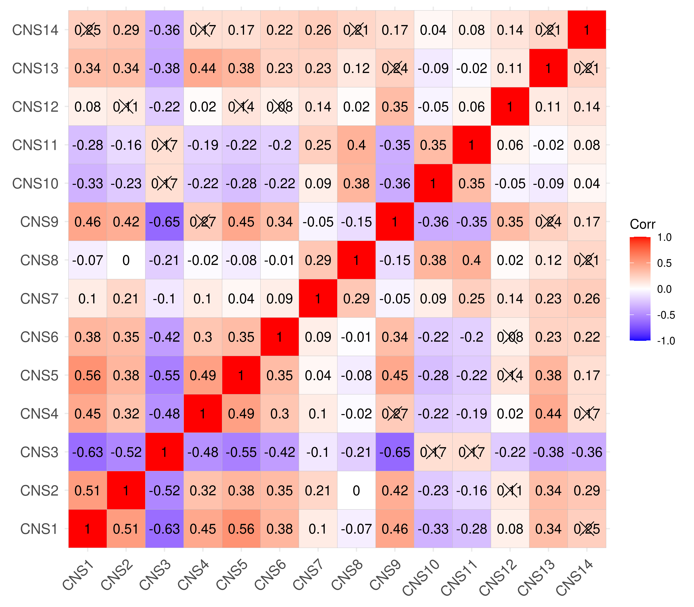
For relative signature activity.
show_cor(dplyr::select(df_merged, starts_with("Rel_Sig")) %>%
dplyr::rename_all(~ sub("Rel_", "", .)))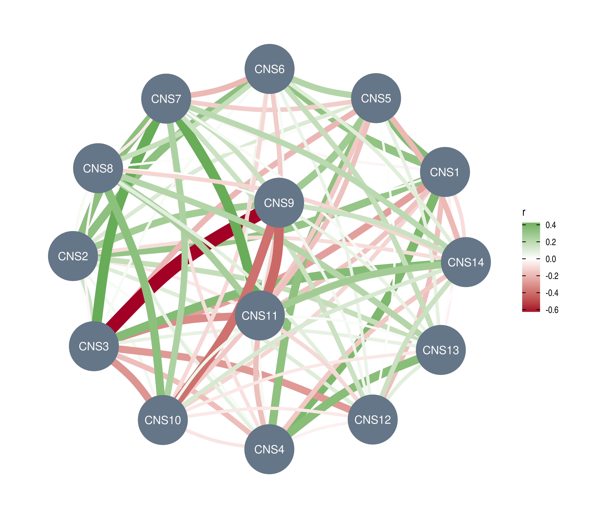 We can find that most the signatures are correlated. Therefore, it will add difficulty in understanding etiologies by association analysis.
Copy number signatures and COSMIC signatures
p_cosmic <- show_cor(
data = df_merged,
x_vars = colnames(df_merged)[grepl("^Sig", colnames(df_merged))],
y_vars = colnames(df_merged)[grepl("^SBS|^DBS|^ID[0-9]+", colnames(df_merged))],
hc_order = FALSE,
test = FALSE,
lab_size = 2
)
p_cosmic
Signature clustering
We can take a try to cluster signatures based on their activity association.
First get the correlation data.
p_all <- show_cor(
data = df_merged,
x_vars = colnames(df_merged)[grepl("^Sig|^SBS|^DBS|^ID[0-9]+", colnames(df_merged))],
y_vars = colnames(df_merged)[grepl("^Sig|^SBS|^DBS|^ID[0-9]+", colnames(df_merged))],
hc_order = FALSE,
test = FALSE,
lab_size = 3
)Get the correlation matrix and convert it into distance matrix.
p_all_cor <- p_all$cor$cor_mat
all_dist <- 1 - p_all_cor
# Set the NA value to 2
all_dist[is.na(all_dist)] <- 2Only include copy number signatures
dist_cn <- as.dist(all_dist[1:11, 1:11])
hc_cn <- hclust(dist_cn)
plot(hc_cn)
Roughly there is 3 clusters.
factoextra::fviz_dend(hc_cn, k = 3, rect = T)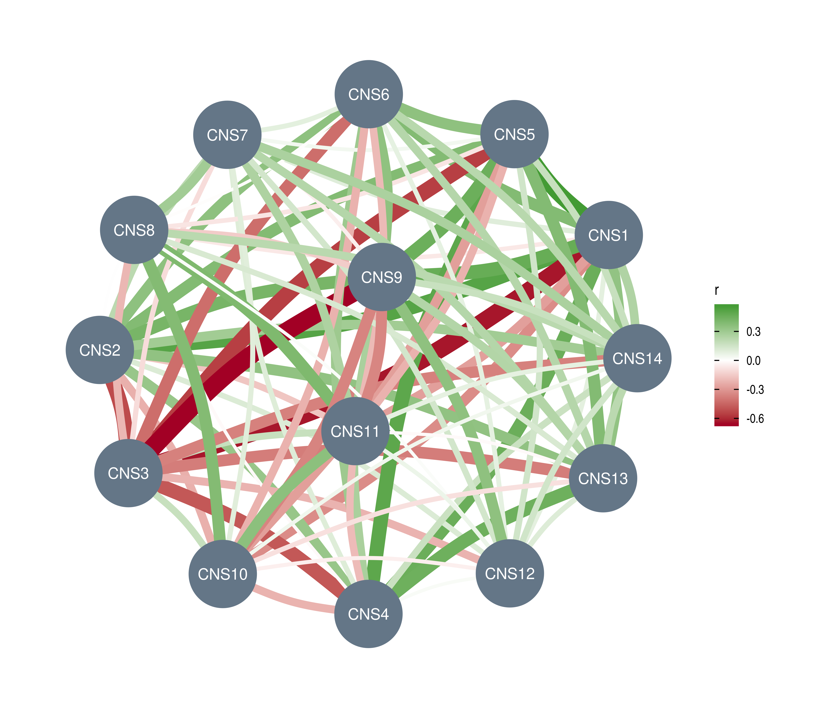
All signatures
dist_all <- as.dist(all_dist)
hc_all <- hclust(dist_all)
plot(hc_all) Here we manually set 10 clusters for better visualization.
Here we manually set 10 clusters for better visualization.
factoextra::fviz_dend(
hc_all,
k = 10,
cex = 0.6, rect = F,
type = "circular"
) + theme_void() +
theme(
panel.border = element_blank()
)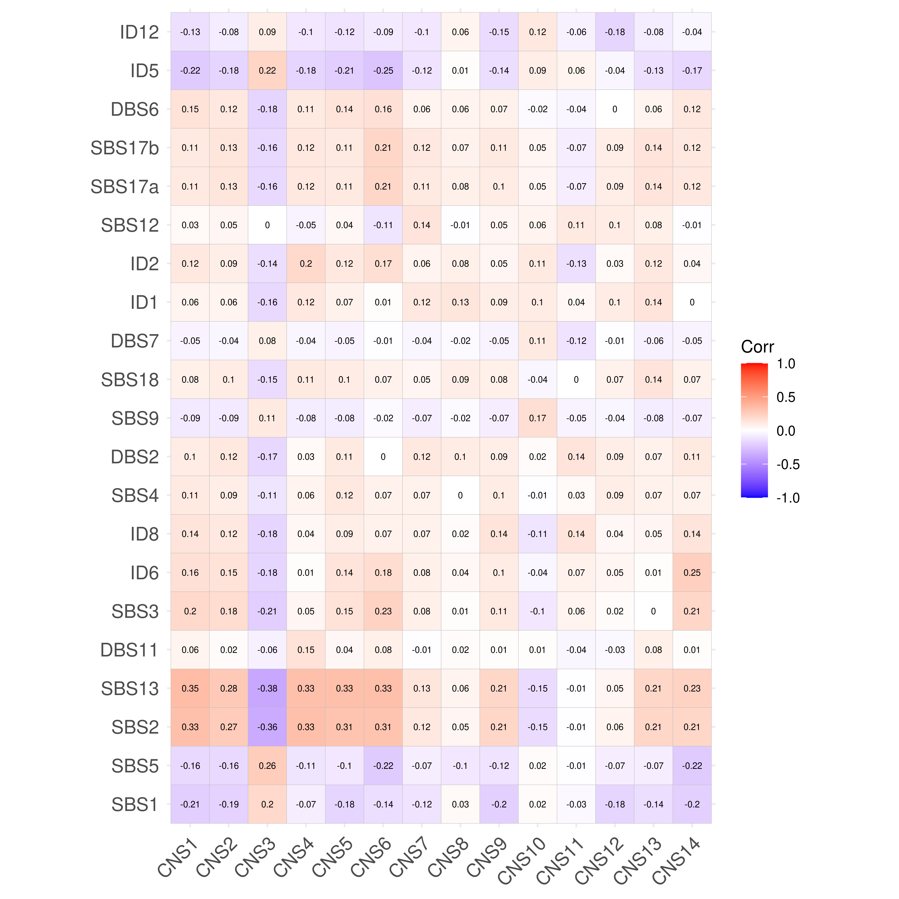
# theme(
# panel.background = element_rect(fill = "transparent", colour = NA),
# plot.background = element_rect(fill = "transparent", colour = NA),
# panel.grid = element_blank(),
# panel.border = element_blank(),
# plot.margin = unit(c(0, 0, 0, 0), "null"),
# panel.margin = unit(c(0, 0, 0, 0), "null"),
# axis.ticks = element_blank(),
# axis.text = element_blank(),
# axis.title = element_blank(),
# axis.line = element_blank(),
# legend.position = "none",
# axis.ticks.length = unit(0, "null"),
# axis.ticks.margin = unit(0, "null"),
# legend.margin = unit(0, "null")
# )Association between CNS and genotype/phenotype features
Association between CNS and continuous variables
p_cn_others <- show_cor(
data = df_merged,
x_vars = colnames(df_merged)[2:12],
y_vars = colnames(df_merged)[c(24:38, 119:121)],
lab_size = 3
)
p_cn_others
Association between CNS and discrete variables
Here we directly compare the CNS activity between different discrete variable groups.
Here 3 variables including WGD_Status, HRD_Status and Tumor_Stage are included.
df_ds <- tidy_info %>%
dplyr::filter(keep) %>%
dplyr::select(sample, starts_with("Abs")) %>%
dplyr::mutate_if(is.numeric, ~ log2(. + 1)) %>%
purrr::set_names(c("sample", paste0("Sig", 1:11))) %>%
dplyr::left_join(
tidy_anno %>%
tibble::rownames_to_column("sample") %>%
dplyr::select(sample, WGD_Status, HRD_Status, Tumor_Stage),
by = "sample"
) %>%
dplyr::mutate(Tumor_Stage = ifelse(Tumor_Stage == "Unknown", NA, Tumor_Stage)) %>%
tidyr::pivot_longer(
starts_with("Sig"),
names_to = "sig_name",
values_to = "activity"
)library(ggpubr)For WGD.
ggboxplot(
df_ds,
x = "sig_name", y = "activity",
color = "WGD_Status",
palette = "jco", width = .3,
xlab = FALSE, ylab = "log2(Activity)",
outlier.size = 0.05
) +
stat_compare_means(aes(group = WGD_Status), label = "p.signif")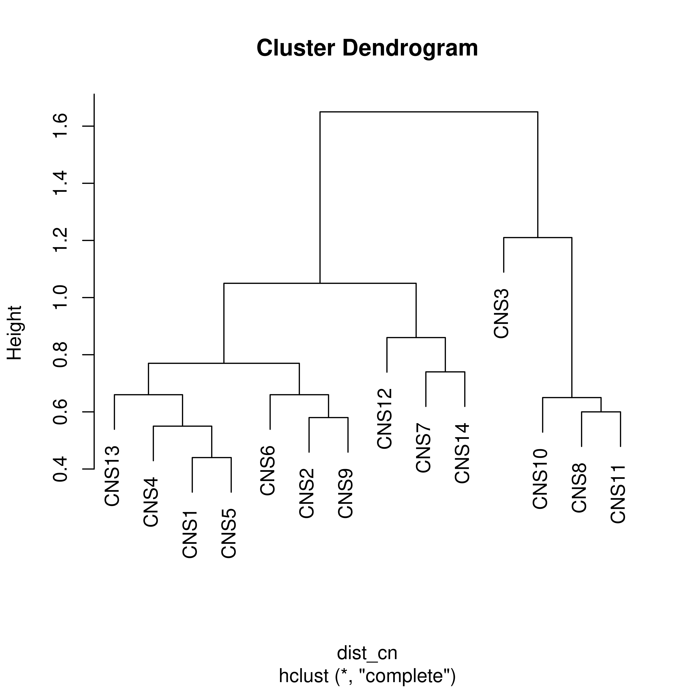 For HRD.
ggboxplot(
df_ds %>%
dplyr::mutate(HRD_Status = factor(HRD_Status, c("no_hrd", "hrd"))),
x = "sig_name", y = "activity",
color = "HRD_Status",
palette = "jco", width = .3,
xlab = FALSE, ylab = "log2(Activity)",
outlier.size = 0.05
) +
stat_compare_means(aes(group = HRD_Status), label = "p.signif")
For tumor stage.
ggboxplot(
df_ds %>% dplyr::filter(!is.na(Tumor_Stage)),
x = "sig_name", y = "activity",
color = "Tumor_Stage",
palette = "jco", width = .3,
xlab = FALSE, ylab = "log2(Activity)",
outlier.size = 0.05
) +
stat_compare_means(aes(group = Tumor_Stage),
label = "p.signif",
method = "anova"
)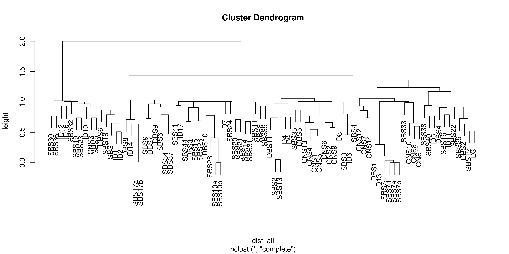
Association between CNS and driver gene mutation
asso_res <- get_sig_feature_association(
df_merged,
cols_to_sigs = paste0("Sig", 1:11),
cols_to_features = colnames(df_merged)[122:205],
method_ca = wilcox.test,
min_n = 0
)
asso_res_tidy <- get_tidy_association(asso_res)Plotting.
show_sig_feature_corrplot(
asso_res_tidy,
sig_orders = paste0("Sig", 1:11),
p_val = 0.05,
breaks_count = NA,
ylab = NULL,
xlab = NULL
) + ggpubr::rotate_x_text(0, hjust = 0.5) +
labs(color = "Difference\nin means of\nactivity")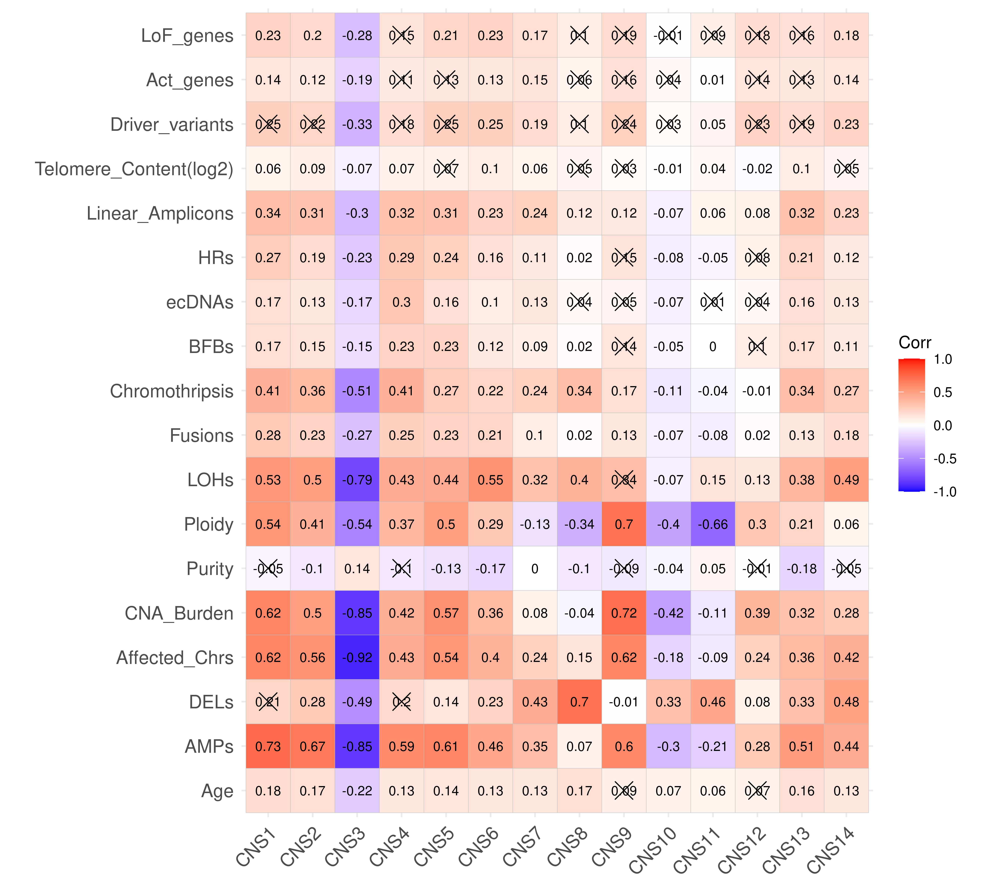
Association between CNS and patients’ prognosis
Get tidy data fro survival analysis.
library(ezcox)
cluster_df <- readRDS("../data/pcawg_clusters.rds") %>%
as.data.frame() %>%
tibble::rownames_to_column("sample")
df_surv <- tidy_info %>%
dplyr::filter(keep) %>%
dplyr::select(
sample, cancer_type, donor_survival_time, donor_vital_status,
dplyr::starts_with("Abs_")
) %>%
dplyr::left_join(
cluster_df,
by = "sample"
) %>%
na.omit() %>%
dplyr::rename(
time = donor_survival_time,
status = donor_vital_status,
cluster = `k=6`
) %>%
dplyr::mutate(
status = ifelse(status == "deceased", 1, 0)
) %>%
dplyr::rename_at(vars(starts_with("Abs_")), ~ sub("Abs_", "", .)) %>%
dplyr::mutate_at(vars(starts_with("Sig")), ~ . / 10)We divide all signature activity by 10 to explore the HR change per 10 records contributed by a signature.
Unicox analysis for CNS
Here we focus on the association between each CNS and patients’ overall survival time.
p1 <- show_forest(df_surv,
covariates = paste0("Sig", 1:11),
merge_models = TRUE, add_caption = FALSE, point_size = 2
)
p1
Multivariate cox analysis for CNS
We also build a multivariate cox model to explore if all CNSs are included, which is more important?
p2 <- show_forest(df_surv,
covariates = "Sig1", controls = paste0("Sig", 2:11),
merge_models = TRUE, add_caption = FALSE, point_size = 2
)
p2
Signature similarity comparison between different types of signatures
The similarity between signatures is a key parameter, it determines how hard it is to distinguish between signatures and the precision to assign the contribution to a signature. If you have read the paper Maura et al. (2019), you may know that 2 of 3 main issues proposed by the authors are actually because of high similarity between mutational signatures:
- the ambiguous signature assignment that occurs when different combinations of signatures can explain equally well the same mutational catalog.
- bleeding of signatures that signatures present in only part of the set are also erroneously assigned to the entire set.
In this section, we explore the similarity of CNSs discovered in this study and known COSMIC signatures.
Load data.
CNS <- readRDS("../data/pcawg_cn_sigs_CN176_signature.rds")
SBSv2 <- get_sig_db()
SBS <- get_sig_db("SBS")
DBS <- get_sig_db("DBS")
ID <- get_sig_db("ID")Get signature similarity in each signature type.
sim_CNS <- get_sig_similarity(CNS, CNS)$similarity
sim_SBSv2 <- get_sig_similarity(SBSv2$db, SBSv2$db)$similarity
sim_SBS <- get_sig_similarity(SBS$db, SBS$db)$similarity
sim_DBS <- get_sig_similarity(DBS$db, DBS$db)$similarity
sim_ID <- get_sig_similarity(ID$db, ID$db)$similarityOnly use upper matrix to get similarity between one signature and non-self signatures.
a <- sim_CNS[upper.tri(sim_CNS)]
b <- sim_SBSv2[upper.tri(sim_SBSv2)]
c <- sim_SBS[upper.tri(sim_SBS)]
d <- sim_DBS[upper.tri(sim_DBS)]
e <- sim_ID[upper.tri(sim_ID)]
df_sim <- dplyr::tibble(
sig_type = rep(
c("CNS", "SBSv2", "SBS", "DBS", "ID"),
c(length(a), length(b), length(c), length(d), length(e))
),
similarity = c(a, b, c, d, e)
)See header rows:
head(df_sim)# A tibble: 6 x 2
sig_type similarity
<chr> <dbl>
1 CNS 0.455
2 CNS 0.015
3 CNS 0
4 CNS 0.131
5 CNS 0.001
6 CNS 0.059Let’s visualize it and use ‘CNS’ as reference group to run statistical test (‘wilcox.test’ method).
library(ggpubr)
ggboxplot(df_sim,
x = "sig_type", y = "similarity",
color = "sig_type",
xlab = FALSE,
ylab = "Similarity between signatures",
legend = "none",
palette = "jco",
width = 0.3,
outlier.size = 0.05
) +
# stat_compare_means(method = "anova") +
stat_compare_means(
label = "p.signif", method = "wilcox.test",
ref.group = "CNS"
) We can see that signature type CNS has lowest similarity level and CNS signatures are not likely similar to others. CNS has much lower similarity level than all other signature types except DBS.
We can see that signature type CNS has lowest similarity level and CNS signatures are not likely similar to others. CNS has much lower similarity level than all other signature types except DBS.
Data summary and inference of signature etiologies
This is a summary section, we utilize all data we got from analyses in this study and infer how should we explore each copy number signature.
We will list all CNSs, and their features, associations and our inferences here.
TODO
Supplementary Analyses
In this part, we will add some supplementary analyses.
Signature association network construction and visualization
Try to learn from NC paper
TCGA CNS analysis
Think and check in future
Copy number signatures
Cancer subtyping
Prognosis
Exploration of differnt signature extraction methods
Similarity for same number of signatures
R Session:
Many thanks to authors and contributors of all packages used in this project.
devtools::session_info()─ Session info ───────────────────────────────────────────────────────────────
setting value
version R version 4.0.2 (2020-06-22)
os macOS High Sierra 10.13.6
system x86_64, darwin17.0
ui X11
language EN
collate zh_CN.UTF-8
ctype zh_CN.UTF-8
tz Asia/Shanghai
date 2020-12-31
─ Packages ───────────────────────────────────────────────────────────────────
package * version date lib
abind 1.4-5 2016-07-21 [1]
annotate 1.66.0 2020-04-28 [1]
AnnotationDbi 1.50.3 2020-07-25 [1]
assertthat 0.2.1 2019-03-21 [1]
backports 1.2.1 2020-12-09 [1]
bigmemory * 4.5.36 2019-12-23 [1]
bigmemory.sri 0.1.3 2014-08-18 [1]
Biobase * 2.48.0 2020-04-27 [1]
BiocGenerics * 0.34.0 2020-04-27 [1]
BiocManager 1.30.10 2019-11-16 [1]
bit 4.0.4 2020-08-04 [1]
bit64 4.0.5 2020-08-30 [1]
bitops 1.0-6 2013-08-17 [1]
blob 1.2.1 2020-01-20 [1]
bookdown 0.21 2020-10-13 [1]
brew 1.0-6 2011-04-13 [1]
broom 0.7.3 2020-12-16 [1]
Cairo 1.5-12.2 2020-07-07 [1]
callr 3.5.1 2020-10-13 [1]
car 3.0-10 2020-09-29 [1]
carData 3.0-4 2020-05-22 [1]
cellranger 1.1.0 2016-07-27 [1]
circlize 0.4.11 2020-10-31 [1]
cli 2.2.0 2020-11-20 [1]
clue 0.3-58 2020-12-03 [1]
cluster 2.1.0 2019-06-19 [2]
codetools 0.2-18 2020-11-04 [2]
cola * 1.9.0.1012 2020-12-22 [1]
colorspace 2.0-0 2020-11-11 [1]
ComplexHeatmap * 2.7.2.1000 2020-12-22 [1]
cowplot * 1.1.0 2020-09-08 [1]
crayon 1.3.4 2017-09-16 [1]
crosstalk 1.1.0.1 2020-03-13 [1]
curl 4.3 2019-12-02 [1]
data.table 1.13.4 2020-12-08 [1]
DBI 1.1.0 2019-12-15 [1]
dbplyr 2.0.0 2020-11-03 [1]
dendextend 1.14.0 2020-08-26 [1]
desc 1.2.0 2018-05-01 [1]
devtools 2.3.2 2020-09-18 [1]
digest 0.6.27 2020-10-24 [1]
doParallel 1.0.16 2020-10-16 [1]
dplyr * 1.0.2 2020-08-18 [1]
DT 0.16 2020-10-13 [1]
ellipsis 0.3.1 2020-05-15 [1]
eulerr 6.1.0 2020-03-09 [1]
evaluate 0.14 2019-05-28 [1]
ezcox * 0.8.0 2020-09-25 [1]
factoextra 1.0.7 2020-04-01 [1]
fansi 0.4.1 2020-01-08 [1]
farver 2.0.3 2020-01-16 [1]
forcats * 0.5.0 2020-03-01 [1]
foreach 1.5.1 2020-10-15 [1]
foreign 0.8-80 2020-05-24 [2]
forestmodel 0.6.2 2020-07-19 [1]
fs 1.5.0 2020-07-31 [1]
furrr 0.2.1 2020-10-21 [1]
future 1.21.0 2020-12-10 [1]
genefilter 1.70.0 2020-04-27 [1]
generics 0.1.0 2020-10-31 [1]
GetoptLong 1.0.5 2020-12-15 [1]
ggcorrplot 0.1.3 2019-05-19 [1]
ggplot2 * 3.3.2 2020-06-19 [1]
ggplotify 0.0.5 2020-03-12 [1]
ggpubr * 0.4.0 2020-06-27 [1]
ggrepel 0.9.0 2020-12-16 [1]
ggsci 2.9 2018-05-14 [1]
ggsignif 0.6.0 2019-08-08 [1]
ggwordcloud * 0.5.0 2019-06-02 [1]
GlobalOptions 0.1.2 2020-06-10 [1]
globals 0.14.0 2020-11-22 [1]
glue 1.4.2 2020-08-27 [1]
gridBase 0.4-7 2014-02-24 [1]
gridExtra 2.3 2017-09-09 [1]
gridGraphics 0.5-1 2020-12-13 [1]
gtable 0.3.0 2019-03-25 [1]
haven 2.3.1 2020-06-01 [1]
hms 0.5.3 2020-01-08 [1]
htmltools 0.5.0 2020-06-16 [1]
htmlwidgets 1.5.3 2020-12-10 [1]
httr 1.4.2 2020-07-20 [1]
impute 1.62.0 2020-04-27 [1]
IRanges 2.22.2 2020-05-21 [1]
iterators 1.0.13 2020-10-15 [1]
jsonlite 1.7.2 2020-12-09 [1]
km.ci 0.5-2 2009-08-30 [1]
KMsurv 0.1-5 2012-12-03 [1]
knitr * 1.30 2020-09-22 [1]
labeling 0.4.2 2020-10-20 [1]
languageserver 0.3.9 2020-12-18 [1]
lattice 0.20-41 2020-04-02 [2]
lifecycle 0.2.0 2020-03-06 [1]
listenv 0.8.0 2019-12-05 [1]
lubridate 1.7.9.2 2020-11-13 [1]
magick 2.5.2 2020-11-10 [1]
magrittr 2.0.1 2020-11-17 [1]
markdown 1.1 2019-08-07 [1]
Matrix 1.2-18 2019-11-27 [2]
matrixStats 0.57.0 2020-09-25 [1]
mclust 5.4.7 2020-11-20 [1]
memoise 1.1.0 2017-04-21 [1]
microbenchmark 1.4-7 2019-09-24 [1]
modelr 0.1.8 2020-05-19 [1]
munsell 0.5.0 2018-06-12 [1]
NMF 0.23.0 2020-08-01 [1]
openxlsx 4.2.3 2020-10-27 [1]
pacman * 0.5.1 2019-03-11 [1]
parallelly 1.22.0 2020-12-13 [1]
patchwork 1.1.1 2020-12-17 [1]
pheatmap 1.0.12 2019-01-04 [1]
pillar 1.4.7 2020-11-20 [1]
pkgbuild 1.2.0 2020-12-15 [1]
pkgconfig 2.0.3 2019-09-22 [1]
pkgload 1.1.0 2020-05-29 [1]
pkgmaker 0.32.2 2020-10-20 [1]
plyr 1.8.6 2020-03-03 [1]
png 0.1-7 2013-12-03 [1]
prettyunits 1.1.1 2020-01-24 [1]
processx 3.4.5 2020-11-30 [1]
ps 1.5.0 2020-12-05 [1]
purrr * 0.3.4 2020-04-17 [1]
R.cache 0.14.0 2019-12-06 [1]
R.methodsS3 1.8.1 2020-08-26 [1]
R.oo 1.24.0 2020-08-26 [1]
R.utils 2.10.1 2020-08-26 [1]
R6 2.5.0 2020-10-28 [1]
RColorBrewer 1.1-2 2014-12-07 [1]
Rcpp 1.0.5 2020-07-06 [1]
RCurl 1.98-1.2 2020-04-18 [1]
readr * 1.4.0 2020-10-05 [1]
readxl 1.3.1 2019-03-13 [1]
registry 0.5-1 2019-03-05 [1]
rematch2 2.1.2 2020-05-01 [1]
remotes 2.2.0 2020-07-21 [1]
reprex 0.3.0 2019-05-16 [1]
reshape2 1.4.4 2020-04-09 [1]
rio 0.5.16 2018-11-26 [1]
rjson 0.2.20 2018-06-08 [1]
rlang 0.4.9 2020-11-26 [1]
rmarkdown 2.6 2020-12-14 [1]
rmdformats * 1.0.0 2020-11-23 [1]
rngtools 1.5 2020-01-23 [1]
roxygen2 7.1.1 2020-06-27 [1]
roxytest * 0.0.1 2020-06-03 [1]
rprojroot 2.0.2 2020-11-15 [1]
RSQLite 2.2.1 2020-09-30 [1]
rstatix 0.6.0 2020-06-18 [1]
rstudioapi 0.13 2020-11-12 [1]
rvcheck 0.1.8 2020-03-01 [1]
rvest 0.3.6 2020-07-25 [1]
S4Vectors 0.26.1 2020-05-16 [1]
scales 1.1.1 2020-05-11 [1]
sessioninfo 1.1.1 2018-11-05 [1]
shape 1.4.5 2020-09-13 [1]
sigminer * 1.1.0.99 2020-12-28 [1]
skmeans 0.2-13 2020-12-03 [1]
slam 0.1-48 2020-12-03 [1]
stringi 1.5.3 2020-09-09 [1]
stringr * 1.4.0 2019-02-10 [1]
styler 1.3.2 2020-02-23 [1]
survival * 3.2-7 2020-09-28 [2]
survminer * 0.4.8 2020-07-25 [1]
survMisc 0.5.5 2018-07-05 [1]
synchronicity * 1.3.5 2018-08-21 [1]
testthat 3.0.1 2020-12-17 [1]
tibble * 3.0.4 2020-10-12 [1]
tidyr * 1.1.2 2020-08-27 [1]
tidyselect 1.1.0 2020-05-11 [1]
tidyverse * 1.3.0 2019-11-21 [1]
usethis 2.0.0 2020-12-10 [1]
utf8 1.1.4 2018-05-24 [1]
uuid 0.1-4 2020-02-26 [1]
vctrs 0.3.6 2020-12-17 [1]
viridis 0.5.1 2018-03-29 [1]
viridisLite 0.3.0 2018-02-01 [1]
withr 2.3.0 2020-09-22 [1]
xfun 0.19 2020-10-30 [1]
XML 3.99-0.5 2020-07-23 [1]
xml2 1.3.2 2020-04-23 [1]
xtable 1.8-4 2019-04-21 [1]
yaml 2.2.1 2020-02-01 [1]
zip 2.1.1 2020-08-27 [1]
zoo 1.8-8 2020-05-02 [1]
source
CRAN (R 4.0.0)
Bioconductor
Bioconductor
CRAN (R 4.0.0)
CRAN (R 4.0.2)
CRAN (R 4.0.0)
CRAN (R 4.0.0)
Bioconductor
Bioconductor
CRAN (R 4.0.0)
CRAN (R 4.0.2)
CRAN (R 4.0.2)
CRAN (R 4.0.0)
CRAN (R 4.0.0)
CRAN (R 4.0.2)
CRAN (R 4.0.0)
CRAN (R 4.0.2)
CRAN (R 4.0.2)
CRAN (R 4.0.2)
CRAN (R 4.0.2)
CRAN (R 4.0.0)
CRAN (R 4.0.0)
CRAN (R 4.0.2)
CRAN (R 4.0.2)
CRAN (R 4.0.2)
CRAN (R 4.0.2)
CRAN (R 4.0.2)
Github (jokergoo/cola@a59f2aa)
CRAN (R 4.0.2)
Github (jokergoo/ComplexHeatmap@46b5212)
CRAN (R 4.0.2)
CRAN (R 4.0.0)
CRAN (R 4.0.0)
CRAN (R 4.0.0)
CRAN (R 4.0.2)
CRAN (R 4.0.0)
CRAN (R 4.0.2)
CRAN (R 4.0.0)
CRAN (R 4.0.0)
CRAN (R 4.0.2)
CRAN (R 4.0.2)
CRAN (R 4.0.2)
CRAN (R 4.0.2)
CRAN (R 4.0.2)
CRAN (R 4.0.0)
CRAN (R 4.0.2)
CRAN (R 4.0.0)
local
CRAN (R 4.0.2)
CRAN (R 4.0.0)
CRAN (R 4.0.0)
CRAN (R 4.0.0)
CRAN (R 4.0.2)
CRAN (R 4.0.2)
CRAN (R 4.0.2)
CRAN (R 4.0.2)
CRAN (R 4.0.2)
CRAN (R 4.0.2)
Bioconductor
CRAN (R 4.0.2)
CRAN (R 4.0.2)
CRAN (R 4.0.2)
CRAN (R 4.0.2)
CRAN (R 4.0.0)
CRAN (R 4.0.2)
CRAN (R 4.0.2)
CRAN (R 4.0.0)
CRAN (R 4.0.0)
CRAN (R 4.0.2)
CRAN (R 4.0.0)
CRAN (R 4.0.2)
CRAN (R 4.0.2)
CRAN (R 4.0.0)
CRAN (R 4.0.0)
CRAN (R 4.0.2)
CRAN (R 4.0.0)
CRAN (R 4.0.0)
CRAN (R 4.0.0)
CRAN (R 4.0.2)
CRAN (R 4.0.2)
CRAN (R 4.0.2)
Bioconductor
Bioconductor
CRAN (R 4.0.2)
CRAN (R 4.0.2)
CRAN (R 4.0.0)
CRAN (R 4.0.0)
CRAN (R 4.0.2)
CRAN (R 4.0.2)
CRAN (R 4.0.2)
CRAN (R 4.0.2)
CRAN (R 4.0.0)
CRAN (R 4.0.0)
CRAN (R 4.0.2)
CRAN (R 4.0.2)
CRAN (R 4.0.2)
CRAN (R 4.0.0)
CRAN (R 4.0.2)
CRAN (R 4.0.2)
CRAN (R 4.0.2)
CRAN (R 4.0.0)
CRAN (R 4.0.0)
CRAN (R 4.0.0)
CRAN (R 4.0.0)
CRAN (R 4.0.2)
CRAN (R 4.0.2)
CRAN (R 4.0.0)
CRAN (R 4.0.2)
CRAN (R 4.0.2)
CRAN (R 4.0.0)
CRAN (R 4.0.2)
CRAN (R 4.0.2)
CRAN (R 4.0.0)
CRAN (R 4.0.0)
CRAN (R 4.0.2)
CRAN (R 4.0.0)
CRAN (R 4.0.0)
CRAN (R 4.0.0)
CRAN (R 4.0.2)
CRAN (R 4.0.2)
CRAN (R 4.0.0)
CRAN (R 4.0.0)
CRAN (R 4.0.0)
CRAN (R 4.0.0)
CRAN (R 4.0.2)
CRAN (R 4.0.2)
CRAN (R 4.0.0)
CRAN (R 4.0.2)
CRAN (R 4.0.0)
CRAN (R 4.0.2)
CRAN (R 4.0.0)
CRAN (R 4.0.0)
CRAN (R 4.0.0)
CRAN (R 4.0.2)
CRAN (R 4.0.0)
CRAN (R 4.0.0)
CRAN (R 4.0.0)
CRAN (R 4.0.0)
CRAN (R 4.0.2)
CRAN (R 4.0.2)
CRAN (R 4.0.2)
CRAN (R 4.0.0)
CRAN (R 4.0.0)
CRAN (R 4.0.2)
CRAN (R 4.0.2)
CRAN (R 4.0.2)
CRAN (R 4.0.2)
CRAN (R 4.0.2)
CRAN (R 4.0.0)
CRAN (R 4.0.2)
Bioconductor
CRAN (R 4.0.0)
CRAN (R 4.0.0)
CRAN (R 4.0.2)
local
CRAN (R 4.0.2)
CRAN (R 4.0.2)
CRAN (R 4.0.2)
CRAN (R 4.0.0)
CRAN (R 4.0.0)
CRAN (R 4.0.2)
CRAN (R 4.0.2)
CRAN (R 4.0.0)
CRAN (R 4.0.2)
CRAN (R 4.0.2)
CRAN (R 4.0.2)
CRAN (R 4.0.2)
CRAN (R 4.0.0)
CRAN (R 4.0.0)
CRAN (R 4.0.2)
CRAN (R 4.0.0)
CRAN (R 4.0.0)
CRAN (R 4.0.2)
CRAN (R 4.0.0)
CRAN (R 4.0.0)
CRAN (R 4.0.2)
CRAN (R 4.0.2)
CRAN (R 4.0.2)
CRAN (R 4.0.0)
CRAN (R 4.0.0)
CRAN (R 4.0.0)
CRAN (R 4.0.2)
CRAN (R 4.0.0)
[1] /Users/wsx/R_library
[2] /Library/Frameworks/R.framework/Versions/4.0/Resources/library